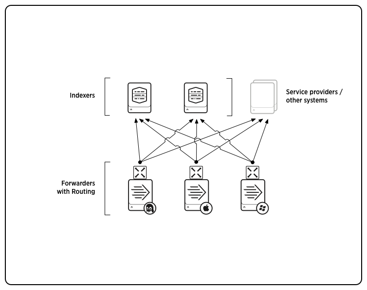

About forwarding and receiving
Important: Before reading this manual, you should be familiar with the fundamentals of Splunk Enterprise distributed deployment, as described in the Distributed Deployment Manual.
You can forward data from one Splunk Enterprise instance to another Splunk Enterprise instance or even to a non-Splunk system. The Splunk Enterprise instance that performs the forwarding is typically a smaller footprint version of Splunk Enterprise, called a forwarder.
A Splunk Enterprise instance that receives data from one or more forwarders is called a receiver. The receiver is usually a Splunk Enterprise indexer, but can also be another forwarder, as described here.
This diagram shows three forwarders sending data to a single receiver (an indexer), which then indexes the data and makes it available for searching:

Forwarders represent a much more robust solution for data forwarding than raw network feeds, with their capabilities for:
- Tagging of metadata (source, source type, and host)
- Configurable buffering
- Data compression
- SSL security
- Use of any available network ports
The forwarding and receiving capability makes possible all sorts of interesting Splunk Enterprise topologies to handle functions like data consolidation, load balancing, and data routing. For more information on the types of deployment topologies that you can create with forwarders, see "Forwarder deployment topologies".
There are a few different types of forwarders, as described in "Types of forwarders".
Types of forwarders
There are three types of forwarders:
- The universal forwarder is a streamlined, dedicated version of Splunk Enterprise that contains only the essential components needed to forward data to receivers.
- A heavy forwarder is a full Splunk Enterprise instance, with some features disabled to achieve a smaller footprint.
- A light forwarder is also a full Splunk Enterprise instance, with most features disabled to achieve as small a footprint as possible. The universal forwarder, with its even smaller footprint yet similar functionality, supersedes the light forwarder for nearly all purposes.
Note: The light forwarder has been deprecated in Splunk Enterprise version 6.0. For a list of all deprecated features, see the topic "Deprecated features" in the Release Notes.
In nearly all respects, the universal forwarder represents the best tool for forwarding data to indexers. Its main limitation is that it forwards only unparsed data, as described later in this topic. Therefore, you cannot use it to route data based on event contents. For that, you must use a heavy forwarder. You also cannot index data locally on a universal forwarder; only a heavy forwarder can index and forward.
The universal forwarder
The universal forwarder is Splunk's new lightweight forwarder. You use it to gather data from a variety of inputs and forward the data to a Splunk Enterprise server for indexing and searching. You can also forward data to another forwarder, as an intermediate step before sending the data onwards to an indexer.
The universal forwarder's sole purpose is to forward data. Unlike a full Splunk Enterprise instance, you cannot use the universal forwarder to index or search data. To achieve higher performance and a lighter footprint, it has several limitations:
- The universal forwarder has no searching, indexing, or alerting capability.
- The universal forwarder does not parse data.
- Unlike full Splunk Enterprise, the universal forwarder does not include a bundled version of Python.
For details on the universal forwarder's capabilities, see "Introducing the universal forwarder".
Note: The universal forwarder is a separately downloadable piece of software. Unlike the heavy and light forwarders, you do not enable it from a full Splunk Enterprise instance. To learn how to download, install, and deploy a universal forwarder, see "Universal forwarder deployment overview".
Heavy and light forwarders
While the universal forwarder is generally the preferred way to forward data, you might have reason (legacy-based or otherwise) to use heavy or light forwarders as well. Unlike the universal forwarder, which is an entirely separate, streamlined executable, both heavy and light forwarders are actually full Splunk Enterprise instances with certain features disabled. Heavy and light forwarders differ in capability and the corresponding size of their footprints.
A heavy forwarder (sometimes referred to as a "regular forwarder") has a smaller footprint than a Splunk Enterprise indexer but retains most of the capability, except that it lacks the ability to perform distributed searches. Much of its default functionality, such as Splunk Web, can be disabled, if necessary, to reduce the size of its footprint. A heavy forwarder parses data before forwarding it and can route data based on criteria such as source or type of event.
One key advantage of the heavy forwarder is that it can index data locally, as well as forward data to another Splunk Enterprise instance. You must turn this capability on; it's disabled by default. See "Configure forwarders with outputs.conf" in this manual for details.
A light forwarder has a smaller footprint with much more limited functionality. It forwards only unparsed data. Starting with 4.2, it has been superseded by the universal forwarder, which provides very similar functionality in a smaller footprint. The light forwarder continues to be available mainly to meet any legacy needs. We recommend that you always use the universal forwarder to forward unparsed data. When you install a universal forwarder, the installer gives you the opportunity to migrate checkpoint settings from any (version 4.0 or greater) light forwarder residing on the same machine. See "Introducing the universal forwarder" for a more detailed comparison of the universal and light forwarders.
For detailed information on the capabilities of heavy and light forwarders, see "Heavy and light forwarder capabilities".
To learn how to enable and deploy a heavy or light forwarder, see "Deploy a heavy or light forwarder".
Forwarder comparison
This table summarizes the similarities and differences among the three types of forwarders:
| Features and capabilities | Universal forwarder | Light forwarder | Heavy forwarder |
|---|---|---|---|
| Type of Splunk Enterprise instance | Dedicated executable | Full Splunk Enterprise, with most features disabled | Full Splunk Enterprise, with some features disabled |
| Footprint (memory, CPU load) | Smallest | Small | Medium-to-large (depending on enabled features) |
| Bundles Python? | No | Yes | Yes |
| Handles data inputs? | All types (but scripted inputs might require Python installation) | All types | All types |
| Forwards to Splunk Enterprise? | Yes | Yes | Yes |
| Forwards to 3rd party systems? | Yes | Yes | Yes |
| Serves as intermediate forwarder? | Yes | Yes | Yes |
| Indexer acknowledgment (guaranteed delivery)? | Optional | Optional (version 4.2+) | Optional (version 4.2+) |
| Load balancing? | Yes | Yes | Yes |
| Data cloning? | Yes | Yes | Yes |
| Per-event filtering? | No | No | Yes |
| Event routing? | No | No | Yes |
| Event parsing? | No | No | Yes |
| Local indexing? | No | No | Optional, by setting indexAndForward attribute in outputs.conf
|
| Searching/alerting? | No | No | Optional |
| Splunk Web? | No | No | Optional |
For detailed information on specific capabilities, see the rest of this topic, as well as the other forwarding topics in the manual.
Types of forwarder data
Forwarders can transmit three types of data:
- Raw
- Unparsed
- Parsed
The type of data a forwarder can send depends on the type of forwarder it is, as well as how you configure it. Universal forwarders and light forwarders can send raw or unparsed data. Heavy forwarders can send raw or parsed data.
With raw data, the data stream is forwarded as raw TCP; it is not converted into Splunk's communications format. The forwarder just collects the data and forwards it on. This is particularly useful for sending data to a non-Splunk system.
With unparsed data, a universal forwarder performs only minimal processing. It does not examine the data stream, but it does tag the entire stream with metadata to identify source, source type, and host. It also divides the data stream into 64K blocks and performs some rudimentary timestamping on the stream, for use by the receiving indexer in case the events themselves have no discernible timestamps. The universal forwarder does not identify, examine, or tag individual events.
With parsed data, a heavy forwarder breaks the data into individual events, which it tags and then forwards to a Splunk Enterprise indexer. It can also examine the events. Because the data has been parsed, the forwarder can perform conditional routing based on event data, such as field values.
The parsed and unparsed formats are both referred to as cooked data, to distinguish them from raw data. By default, forwarders send cooked data — in the universal forwarder's case, unparsed data, and in the heavy forwarder's case, parsed data. To send raw data instead, set the sendCookedData=false attribute/value pair in outputs.conf.
Forwarders and indexes
Forwarders forward and route data on an index-by-index basis. By default, they forward all external data, as well as data for the _audit internal index. In some cases, they also forward data for the _internal internal index. You can change this behavior as necessary. For details, see "Filter data by target index".
Forwarder deployment topologies
You can deploy forwarders in a wide variety of scenarios. This topic provides an overview of some of the most useful types of topologies that you can create with forwarders. For detailed information on how to configure various deployment topologies, refer to the topics in the section "Use the forwarder to create deployment topologies".
Data consolidation
Data consolidation is one of the most common topologies, with multiple forwarders sending data to a single Splunk Enterprise instance. The scenario typically involves universal forwarders forwarding unparsed data from workstations or production non-Splunk servers to a central Splunk Enterprise instance for consolidation and indexing. With their lighter footprint, universal forwarders have minimal impact on the performance of the systems they reside on. In other scenarios, heavy forwarders can send parsed data to a central Splunk Enterprise indexer.
Here, three universal forwarders are sending data to a single indexer:
For more information on data consolidation, read "Consolidate data from multiple machines".
Load balancing
Load balancing simplifies the process of distributing data across several indexers to handle considerations such as high data volume, horizontal scaling for enhanced search performance, and fault tolerance. In load balancing, the forwarder routes data sequentially to different indexers at specified intervals.
Forwarders perform automatic load balancing, in which the forwarder switches receivers at set time intervals. If parsing is turned on (for a heavy forwarder), the switching will occur at event boundaries.
In this diagram, three universal forwarders are each performing load balancing between two indexers:
For more information on load balancing, read "Set up load balancing".
Routing and filtering
In data routing, a forwarder routes events to specific Splunk Enterprise or third-party servers, based on criteria such as source, source type, or patterns in the events themselves. Routing at the event level requires a heavy forwarder.
A forwarder can also filter and route events to specific queues, or discard them altogether by routing to the null queue.
Here, a heavy forwarder routes data to three indexers based on event patterns:
For more information on routing and filtering, read "Route and filter data".
Forwarders and indexer clusters
You can use forwarders to send data to peer nodes in an indexer cluster. It is recommended that you use load-balanced forwarders for that purpose.
This diagram shows two load-balanced forwarders sending data to a cluster:
To learn more about forwarders and indexer clusters, read "Use forwarders to get your data" in the Managing Indexers and Clusters of Indexers manual. To learn more about indexer clusters in general, read "About indexer clusters and index replication".
Forwarding to non-Splunk systems
You can send raw data to a third-party system such as a syslog aggregator. You can combine this with data routing, sending some data to a non-Splunk system and other data to one or more Splunk Enterprise servers.
Here, three forwarders are routing data to two Splunk Enterprise servers and a non-Splunk system:

For more information on forwarding to non-Splunk systems, read "Forward data to third-party systems".
Intermediate forwarding
To handle some advanced use cases, you might want to insert an intermediate forwarder between a group of forwarders and the indexer. In this type of scenario, the originating forwarders send data to a consolidating forwarder, which then forwards the data on to an indexer, usually after indexing it locally.
Typical use cases are situations where you need an intermediate index, either for "store-and-forward" requirements or to enable localized searching. (In this case, you would need to use a heavy forwarder.) You can also use an intermediate forwarder if you have some need to limit access to the indexer machine; for instance, for security reasons.
To enable intermediate forwarding, you need to configure the forwarder as a both a forwarder and a receiver. For information on how to configure a receiver, read "Enable a receiver".
Configure forwarding
Set up forwarding and receiving
Once you've determined your forwarder deployment topology and what type of forwarder is necessary to implement it, the steps for setting up forwarding and receiving are straightforward. This topic outlines the key steps and provides links to the detailed topics.
To set up forwarding and receiving, you need to perform two basic actions, in this order:
1. Set up one or more Splunk Enterprise indexers as receivers. These will receive the data from the forwarders.
2. Set up one or more forwarders. These will forward data to the receivers.
The remainder of this topic lists the key steps involved, with links to more detailed topics. The procedures vary somewhat according to whether the forwarder is a universal forwarder or a heavy/light forwarder. Universal forwarders can sometimes be installed and configured in a single step. Heavy/light forwarders are first installed as full Splunk Enterprise instances and then configured as forwarders.
Note: This topic assumes that your receivers are indexers. However, in some scenarios, discussed elsewhere, a forwarder also serves as receiver. The set-up is basically much the same for any kind of receiver.
Note: You cannot forward data across a proxy, because the communication between forwarder and receiver does not use the HTTP protocol.
Forwarders and indexer clusters
When using forwarders to send data to peer nodes in an indexer cluster, you set up forwarding and receiving a bit differently from the description in this topic. To learn more about forwarders and clusters, read "Use forwarders to get your data" in the Managing Indexers and Clusters of Indexers manual.
Set up forwarding and receiving: universal forwarders
1. Install the full Splunk Enterprise instances that will serve as receivers. See the Installation Manual for details.
2. Use Splunk Web or the CLI to enable receiving on the instances designated as receivers. See "Enable a receiver" in this manual.
3. Install, configure, and deploy the universal forwarders. Depending on your forwarding needs, there are a number of best practices deployment scenarios. See "Universal forwarder deployment overview" for details. Some of these scenarios allow you to configure the forwarder during the installation process.
4. If you have not already done so during installation, you must specify data inputs for each universal forwarder. See "What Splunk Enterprise can index" in the Getting Data In manual. In some cases, you can configure your forwarder inputs directly from the Add Data page on the receiving indexer. See "Forward data" in the Getting Data In manual.
Note: Since the universal forwarder does not include Splunk Web, you must configure inputs through either the CLI or inputs.conf; you cannot configure them in Splunk Web.
5. If you have not already done so during installation, you must specify the universal forwarders' output configurations. You can do so through the CLI or by editing the outputs.conf file. You get the greatest flexibility by editing outputs.conf. For details, see the other topics in this section, including "Configure forwarders with outputs.conf".
6. Test the results to confirm that forwarding, along with any configured behaviors like load balancing or filtering, is occurring as expected.
Set up forwarding and receiving: heavy or light forwarders
Note: The light forwarder has been deprecated in Splunk Enterprise version 6.0. For a list of all deprecated features, see the topic "Deprecated features" in the Release Notes.
1. Install the full Splunk Enterprise instances that will serve as forwarders and receivers. See the Installation Manual for details.
2. Use Splunk Web or the CLI to enable receiving on the instances designated as receivers. See "Enable a receiver" in this manual.
3. Use Splunk Web or the CLI to enable forwarding on the instances designated as forwarders. See "Deploy a heavy or light forwarder" in this manual.
4. Specify data inputs for the forwarders in the usual manner. See "What Splunk Enterprise can index" in the Getting Data In manual.
5. Specify the forwarders' output configurations. You can do so through Splunk Web, the CLI, or by editing the outputs.conf file. You get the greatest flexibility by editing outputs.conf. For details, see "Deploy a heavy or light forwarder", as well as the other topics in this section, including "Configure forwarders with outputs.conf".
6. Test the results to confirm that forwarding, along with any configured behaviors like load balancing or routing, is occurring as expected.
Manage your forwarders
In environments with multiple forwarders, you might find it helpful to use the deployment server to update and manage your forwarders. See "About deployment server" in the Updating Splunk Enterprise Instances manual.
To view the status of your forwarders, you can use the deployment monitor.
Compatibility between forwarders and indexers
These are the specific version compatibility restrictions between forwarders and their receiving indexers:
- 6.x forwarders (universal/light/heavy) are backwards compatible down to 5.0.x indexers.
- 6.x indexers are backwards compatible with forwarders down to 4.3.x.
The following 6.0 features are available only if both indexers and forwarders are at version 6.0 or higher:
- Dynamic file headers
- Forwarding of structured data
- Timezone transmission by the forwarder. The timezone transmission feature of the 6.0+ protocol is not maintained across multiple forwarding links in a multilevel forwarding scenario where intermediate links are light or universal forwarders.
For app-specific compatibility restrictions, check the app's documentation on Splunkbase.
As a best practice, it is recommended that indexers be at the same or higher version level than the forwarders they're receiving data from.
Enable a receiver
To enable forwarding and receiving, you configure both a receiver and a forwarder. The receiver is the Splunk Enterprise instance receiving the data; the forwarder sends data to the receiver.
Depending on your needs (for example to enable load balancing), you might have multiple receivers for each forwarder. Conversely, a single receiver usually receives data from many forwarders.
The receiver is either a Splunk Enterprise indexer (the typical case) or another forwarder (referred to as an "intermediate forwarder") configured to receive data from forwarders.
You must set up the receiver first. You can then set up forwarders to send data to that receiver.
Set up receiving
Before enabling a Splunk Enterprise instance (either an indexer or a forwarder) as a receiver, you must install it. You can then enable receiving on the instance through Splunk Web, the CLI, or the inputs.conf configuration file.
Set up receiving with Splunk Web
Use Splunk Web to set up a receiver:
1. Log into Splunk Web as admin on the server that will be receiving data from a forwarder.
2. Click the Settings link at the top of the page.
3. Select Forwarding and receiving in the Data area.
4. Click Add new in the Receive data section.
5. Specify which TCP port you want the receiver to listen on (the listening port, also known as the receiving port). For example, if you enter "9997," the receiver will receive data on port 9997. By convention, receivers listen on port 9997, but you can specify any unused port. You can use a tool like netstat to determine what ports are available on your system. Make sure the port you select is not in use by splunkweb or splunkd.
6. Click Save. You must restart the instance to complete the process.
Set up receiving with Splunk CLI
To enable receiving, run the CLI command:
splunk enable listen <port> -auth <username>:<password>
For <port>, substitute the port you want the receiver to listen on (the receiving port). For example, if you enter "9997," the receiver will receive data on port 9997. By convention, receivers listen on port 9997, but you can specify any unused port. You can use a tool like netstat to determine what ports are available on your system. Make sure the port you select is not in use by splunkweb or splunkd.
The splunk enable listen command creates a [splunktcp] stanza in inputs.conf. For example, if you set the port to "9997", it creates the stanza [splunktcp://9997].
Set up receiving with the configuration file
You can enable receiving on your Splunk Enterprise instance by configuring inputs.conf in $SPLUNK_HOME/etc/system/local. To configure a universal forwarder as an intermediate forwarder (a forwarder that functions also as a receiver), use this method.
To enable receiving, add a [splunktcp] stanza that specifies the receiving port. In this example, the receiving port is 9997:
[splunktcp://9997]
disabled = 0
For further details, refer to the inputs.conf spec file.
Note: The forms [splunktcp://9997] and [splunktcp://:9997] (one colon or two) are semantically equivalent. Use either one.
Searching data received from a forwarder running on a different operating system
In most cases, a Splunk Enterprise instance receiving data from a forwarder on a different OS will need to install the app for that OS. However, there are numerous subtleties that affect this; read on for the details.
Forwarding and indexing are OS-independent operations. You can employ any combination of forwarders and receivers, as long as each is running on a certified OS. For example, a Linux receiver can index data from a Windows universal forwarder.
Once data has been forwarded and indexed, the next step is to search or perform other knowledge-based activities on the data. At this point, the instance performing such activities might need information about the OS whose data it is examining. You typically handle this by installing the app specific to that OS. For example, if you want a Linux instance to search OS-specific data forwarded from Windows, you will ordinarily want to install the Windows app on the Linux instance.
If the data you're interested in is not OS-specific, such as web logs, then you do not need to install the Splunk OS app.
In addition, if the receiver is only indexing the data, and an external search head is performing the actual searches, you do not need to install the OS app on the receiver, but you might need to install it on the search head. As an alternative, you can use a search head running the OS. For example, to search data forwarded from Windows to a Linux receiver, you can use a Windows search head pointing to the Linux indexer as a remote search peer. For more information on search heads, see "About distributed search".
Important: After you have downloaded the relevant OS app, remove its inputs.conf file before enabling the app, to ensure that its default inputs are not added to your indexer. For the Windows app, the location is: %SPLUNK_HOME%\etc\apps\windows\default\inputs.conf.
In summary, you only need to install the app for the forwarder's OS on the receiver (or search head) if it will be performing searches on the forwarded OS data.
Troubleshoot forwarder to receiver connectivity
Confusing the receiver's receiver and management ports
As part of setting up a forwarder, you specify the receiver's hostname/IP_address and port. The forwarder uses these to send data to the receiver. Be sure to specify the port that was designated as the receiving port at the time the receiver was configured. If you mistakenly specify the receiver's management port, the receiver will generate an error similar to this:
splunkd.log:03-01-2010 13:35:28.653 ERROR TcpInputFd - SSL Error = error:140760FC:SSL routines:SSL23_GET_CLIENT_HELLO:unknown protocol
splunkd.log:03-01-2010 13:35:28.653 ERROR TcpInputFd - ACCEPT_RESULT=-1 VERIFY_RESULT=0
splunkd.log:03-01-2010 13:35:28.653 ERROR TcpInputFd - SSL Error for fd from HOST:localhost.localdomain, IP:127.0.0.1, PORT:53075
splunkd.log:03-01-2010 13:35:28.653 ERROR TcpInputFd - SSL Error = error:140760FC:SSL routines:SSL23_GET_CLIENT_HELLO:unknown protocol
splunkd.log:03-01-2010 13:35:28.653 ERROR TcpInputFd - ACCEPT_RESULT=-1 VERIFY_RESULT=0
splunkd.log:03-01-2010 13:35:28.653 ERROR TcpInputFd - SSL Error for fd from HOST:localhost.localdomain, IP:127.0.0.1, PORT:53076
splunkd.log:03-01-2010 13:35:28.653 ERROR TcpInputFd - SSL Error = error:140760FC:SSL routines:SSL23_GET_CLIENT_HELLO:unknown protocol
splunkd.log:03-01-2010 13:35:28.654 ERROR TcpInputFd - ACCEPT_RESULT=-1 VERIFY_RESULT=0
splunkd.log:03-01-2010 13:35:28.654 ERROR TcpInputFd - SSL Error for fd from HOST:localhost.localdomain, IP:127.0.0.1, PORT:53077
splunkd.log:03-01-2010 13:35:28.654 ERROR TcpInputFd - SSL Error = error:140760FC:SSL routines:SSL23_GET_CLIENT_HELLO:unknown protocol
splunkd.log:03-01-2010 13:35:28.654 ERROR TcpInputFd - ACCEPT_RESULT=-1 VERIFY_RESULT=0
Closed receiver socket
If a receiving indexer's queues become full, it will close the receiver socket, to prevent additional forwarders from connecting to it. If a forwarder with load-balancing enabled can no longer forward to that receiver, it will send its data to another indexer on its list. If the forwarder does not employ load-balancing, it will hold the data until the problem is resolved.
The receiver socket will reopen automatically when the queue gets unclogged.
Typically, a receiver gets behind on the data flow because it can no longer write data due to a full disk or because it is itself attempting to forward data to another Splunk Enterprise instance that is not accepting data.
The following warning message will appear in splunkd.log if the socket gets blocked:
Stopping all listening ports. Queues blocked for more than N seconds.
This message will appear when the socket reopens:
Started listening on tcp ports. Queues unblocked.
Disable receiving
To disable receiving through the CLI, run the splunk disable listen command:
splunk disable listen -port <port> -auth <username>:<password>
You can also disable receiving by deleting the [splunktcp] stanza from inputs.conf.
Answers
Have questions? Visit Splunk Answers and see what questions and answers the Splunk community has around configuring forwarding.
Consolidate data from multiple machines
One of the most common forwarding use cases is to consolidate data originating across numerous machines. Forwarders located on the machines forward the data to a central Splunk Enterprise indexer. With their small footprint, universal forwarders ordinarily have little impact on their machines' performance. This diagram illustrates a common scenario, where universal forwarders residing on machines running diverse operating systems send data to a single Splunk Enterprise instance, which indexes and provides search capabilities across all the data:
The diagram illustrates a small deployment. In practice, the number of universal forwarders in a data consolidation use case could number upwards into the thousands.
This type of use case is simple to configure:
1. Determine what data, originating from which machines, you need to access.
2. Install a Splunk Enterprise instance, typically on its own machine. This instance will function as the receiver. All indexing and searching will occur on it.
3. Enable the instance as a receiver through Splunk Web or the CLI. Using the CLI, enter this command from $SPLUNK_HOME/bin/:
./splunk enable listen <port> -auth <username>:<password>
For <port>, substitute the port you want the receiver to listen on. This also known as the "receiver port".
4. If any of the universal forwarders will be running on a different operating system from the receiver, install the app for the forwarder's OS on the receiver. For example, assume the receiver in the diagram above is running on a Linux box. In that case, you'll need to install the Windows app on the receiver. You might need to install the *nix app, as well. -- However, since the receiver is on Linux, you probably have already installed that app. Details and provisos regarding this can be found here.
After you have downloaded the relevant app, remove its inputs.conf file before enabling it, to ensure that its default inputs are not added to your indexer. For the Windows app, the location is: $SPLUNK_HOME/etc/apps/windows/default/inputs.conf.
5. Install universal forwarders on each machine that will be generating data. These will forward the data to the receiver.
6. Set up inputs for each forwarder. See "What Splunk Enterprise can index".
7. Configure each forwarder to forward data to the receiver. For Windows forwarders, you can do this at installation time, as described here. For *nix forwarders, you must do this through the CLI:
./splunk add forward-server <host>:<port> -auth <username>:<password>
For <host>:<port>, substitute the host and receiver port number of the receiver. For example, splunk_indexer.acme.com:9995.
Alternatively, if you have many forwarders, you can use an outputs.conf file to specify the receiver. For example:
[tcpout:my_indexers]
server= splunk_indexer.acme.com:9995
You can create this file once, then distribute copies of it to each forwarder.
Set up load balancing
With load balancing, a forwarder distributes data across several receiving Splunk Enterprise instances. Each receiver gets a portion of the total data, and together the receivers hold all the data. To access the full set of forwarded data, you need to set up distributed searching across all the receivers. For information on distributed search, see "About distributed search" in the Distributed Search manual.
Load balancing enables horizontal scaling for improved performance. In addition, its automatic switchover capability ensures resiliency in the face of machine outages. If a machine goes down, the forwarder simply begins sending data to the next available receiver.
Load balancing can also be of use when getting data from network devices like routers. To handle syslog and other data generated across port 514, a single heavy forwarder can monitor port 514 and distribute the incoming data across several indexers.
Note: When implementing load balancing between forwarders and receivers, you must use the forwarder's inherent capability. Do not use an external load balancer. The use of external load balancers between forwarders and receivers will not work properly.
How load balancing works
Forwarders perform "automatic load balancing". The forwarder routes data to different indexers based on a specified time interval. For example, assume you have a load-balanced group consisting of three indexers: A, B, and C. At some specified interval, such as every 30 seconds, the forwarder switches the data stream to another indexer in the group, selected at random. So, the forwarder might switch from indexer B to indexer A to indexer C, and so on. If one indexer is down, the forwarder immediately switches to another.
To expand on this a bit, there is a data stream for each of the inputs that the forwarder is configured to monitor. The forwarder determines if it is safe for a data stream to switch to another indexer. Then, at the specified interval, it switches the data stream to the newly selected indexer. If it cannot switch the data stream to the new indexer safely, it keeps the connection to the previous indexer open and continues to send the data stream until it has been safely sent.
Important: Universal forwarders are not able to switch indexers when monitoring TCP network streams of data (including Syslog) unless an EOF is reached or an indexer goes down, at which point the forwarder will switch to the next indexer in the list. Because the universal forwarder does not parse the data and identify event boundaries before forwarding the data to the indexer (unlike a heavy forwarder), it has no way of knowing when it's safe to switch to the next indexer unless it receives an EOF.
Note: Round-robin load balancing, which was previously available as an alternative to automatic load balancing, was deprecated in Splunk Enterprise version 4.2.
This diagram shows a typical load-balancing scenario, in which three forwarders are sending load-balanced data across a set of two receiving indexers:
Targets for load balancing
When configuring the set of target receivers, you can employ either DNS or static lists.
DNS lists provide greater flexibility and simplified scale-up, particularly for large deployments. Through DNS, you can change the set of receivers without needing to re-edit each forwarder's outputs.conf file.
The main advantage of a static list is that it allows you to specify a different port for each receiver. This is useful if you need to perform load balancing across multiple receivers running on a single host. Each receiver can listen on a separate port.
Static list target
To use a static list for the target, you simply specify each of the receivers in the target group's [tcpout] stanza in the forwarder's outputs.conf file. In this example, the target group consists of three receivers, specified by IP address and receiver port number:
[tcpout: my_LB_indexers]
server=10.10.10.1:9997,10.10.10.2:9996,10.10.10.3:9995
The universal forwarder will load balance between the three receivers listed. If one receiver goes down, the forwarder automatically switches to another one on the list.
DNS list target
To use a DNS list, edit your forwarder's outputs.conf file to specify a single host in the target group's [tcpout] stanza. For example:
[tcpout:my_LB_indexers]
server=splunkreceiver.mycompany.com:9997
In your DNS server, create a DNS A record for each host's IP address, referencing the server name you specified in outputs.conf. For example:
splunkreceiver.mycompany.com A 10.10.10.1
splunkreceiver.mycompany.com A 10.10.10.2
splunkreceiver.mycompany.com A 10.10.10.3
The forwarder will use the DNS list to load balance, sending data in intervals, switching among the receivers specified. If a receiver is not available, the forwarder skips it and sends data to another one on the list.
If you have a topology with many forwarders, the DNS list method allows you to update the set of receivers by making changes in just a single location, without touching the forwarders' outputs.conf files.
Configure load balancing for horizontal scaling
To configure load balancing, first determine your needs, particularly your horizontal scaling and failover requirements. Then develop a topology based on those needs, possibly including multiple forwarders, as well as receivers and a search head to search across the receivers.
Assuming a topology of three universal forwarders and three receivers, set up DNS-based load balancing with these steps:
1. Install and enable a set of three Splunk Enterprise instances as receivers. This example uses a DNS list to designate the receivers, so they must all listen on the same port. For example, if the port is 9997, enable each receiver by going to its $SPLUNK_HOME/bin/ location and using this CLI command:
./splunk enable listen 9997 -auth <username>:<password>
2. Install the set of universal forwarders, as described here.
3. Set up a DNS list with an A record for each receiver's IP address:
splunkreceiver.mycompany.com A 10.10.10.1
splunkreceiver.mycompany.com A 10.10.10.2
splunkreceiver.mycompany.com A 10.10.10.3
4. Create a single outputs.conf file for use by all the forwarders. This one specifies the DNS server name used in the DNS list and the port the receivers are listening on:
[tcpout]
defaultGroup=my_LB_indexers
[tcpout:my_LB_indexers]
disabled=false
autoLBFrequency=40
server=splunkreceiver.mycompany.com:9997
This outputs.conf file uses the autoLBFrequency attribute to set a load-balance frequency of 40 seconds. Every 40 seconds, the forwarders will switch to another receiver. The default frequency, which rarely needs changing, is 30 seconds.
5. Distribute the outputs.conf file to all the forwarders. You can use the deployment server to handle the distribution.
The steps are similar if you're using a static list instead of DNS.
Specify load balancing from the CLI
You can also use the CLI to specify load balancing. You do this when you start forwarding activity to a set of receivers, using this syntax:
./splunk add forward-server <host>:<port> -method autobalance
where <host>:<port> is the host and receiver port of the receiver.
This example creates a load-balanced group of four receivers:
./splunk add forward-server indexer1:9997 -method autobalance
./splunk add forward-server indexer2:9997 -method autobalance
./splunk add forward-server indexer3:9997 -method autobalance
./splunk add forward-server indexer4:9997 -method autobalance
The universal forwarder
Introducing the universal forwarder
The universal forwarder is Splunk's lightweight forwarder. Use the universal forwarder to gather data from a variety of inputs and forward the data to a Splunk Enterprise server for indexing and searching.
This section of the Distributed Deployment manual describes how to deploy the universal forwarder for a variety of systems and needs. For information on the different kinds of forwarders and detailed information on configuring them for a range of topologies and use cases, see the "Forward data" chapter of this manual.
The universal forwarder replaces the light forwarder.
Note: The universal forwarder is a separate executable from full Splunk Enterprise. Instances of full Splunk Enterprise and the universal forwarder can co-exist on the same system.
For information on deploying the universal forwarder, see "Universal forwarder deployment overview".
How universal forwarder compares to full Splunk Enterprise
The universal forwarder's sole purpose is to forward data. Unlike a full Splunk Enterprise instance, you cannot use the universal forwarder to index or search data. To achieve higher performance and a lighter footprint, it has several limitations:
- The universal forwarder has no searching, indexing, or alerting capability.
- The universal forwarder does not parse data, except in certain cases.
- The universal forwarder does not output data via syslog.
- Unlike full Splunk Enterprise, the universal forwarder does not include a bundled version of Python.
Scripted inputs and Python
Full Splunk Enterprise comes bundled with Python. The universal forwarder does not. Therefore, if you're currently using scripted inputs with Python and you want to use those scripts with the universal forwarder, you must first install your own version of Python. If you have been using calls specific to Splunk's Python libraries, you cannot do so with the universal forwarder, because those libraries exist only in full Splunk Enterprise. You may use other scripting languages for scripted inputs with the universal forwarder if they are otherwise supported on the target host (for example, Powershell on Windows Server 2008.)
How universal forwarder compares to the light forwarder
The universal forwarder is a streamlined, self-contained forwarder that includes only the essential components needed to forward data to other Splunk Enterprise instances. The light forwarder, by contrast, is a full Splunk Enterprise instance, with certain features disabled to achieve a smaller footprint. In all respects, the universal forwarder represents a better tool for forwarding data to indexers. When you install the universal forwarder, you can migrate from an existing light forwarder, version 4.0 or greater. See "Migrating from a light forwarder" for details.
Compared to the light forwarder, the universal forwarder provides a better performing and more streamlined solution to forwarding. These are the main technical differences between the universal forwarder and the light forwarder:
- The universal forwarder puts less load on the CPU, uses less memory, and has a smaller disk footprint.
- The universal forwarder has a default data transfer rate of 256Kbps
- The universal forwarder does not come bundled with Python.
- The universal forwarder is a forwarder only; it cannot be converted to a full Splunk Enterprise instance.
Note: The light forwarder has been deprecated in Splunk Enterprise version 6.0. For a list of all deprecated features, see the topic "Deprecated features" in the Release Notes.
Read on!
For information on deploying the universal forwarder, see the topics that directly follow this one.
For information on using the universal forwarder to forward data and participate in various distributed topologies, see the topics in the "Overview" chapter of this manual. Those topics also discuss light and heavy forwarders.
For information on third-party Windows binaries that the Windows version of the Splunk Enterprise universal forwarder ships with, read "Information on Windows third-party binaries distributed with Splunk Enterprise" in the Installation Manual.
For information about running the universal forwarder in Windows Safe Mode, read "Splunk Enterprise Architecture and Processes" in the Installation Manual.
Deployment overview
The topics in this chapter describe how to install and deploy the universal forwarder. They include use cases that focus on installing and configuring the forwarder for a number of different scenarios.
Important: Before attempting to deploy the universal forwarder, you must be familiar with how forwarding works and the full range of configuration issues. See:
- the topics in the chapter "Forward data" for an overview of forwarding and forwarders.
- the topics in the chapter "Configure forwarding" to learn how to configure forwarders.
- the subtopic "Set up forwarding and receiving: universal forwarders" for a overview of configuring forwarding and receiving.
Types of deployments
These are the main scenarios for deploying the universal forwarder:
- Deploy a Windows universal forwarder manually, either with the installer GUI or from the commandline.
- Deploy a nix universal forwarder manually, using the CLI to configure it.
- Remotely deploy a universal forwarder (Windows or nix).
- Make the universal forwarder part of a system image.
Each scenario is described in its own topic. For most scenarios, there are separate Windows and *nix topics.
Note: The universal forwarder is its own downloadable executable, separate from full Splunk Enterprise. Unlike the light and heavy forwarders, you do not enable it from a full Splunk Enterprise instance. To download the universal forwarder, go to http://www.splunk.com/download/universalforwarder .
Before you start
Forwarders and indexer clusters
When using forwarders to send data to peer nodes in an indexer cluster, you deploy and configure them a bit differently from the description in this topic. To learn more about forwarders and clusters, read "Use forwarders to get your data" in the Managing Indexers and Clusters of Indexers manual.
Indexer and universal forwarder compatibility
See "Compatibility between forwarders and indexers" for details.
System requirements
See the Installation manual for specific hardware requirements and supported operating systems.
Licensing requirements
The universal forwarder ships with a pre-installed license. See "Types of Splunk Enterprise licenses" in the Admin manual for details.
Other requirements
You must have admin or equivalent rights on the machine where you're installing the universal forwarder.
Steps to deployment
The actual procedure varies depending on the type of deployment, but these are the typical steps:
1. Plan your deployment.
2. Download the universal forwarder from http://www.splunk.com/download/universalforwarder
3. Install the universal forwarder on a test machine.
4. Perform any post-installation configuration.
5. Test and tune the deployment.
6. Deploy the universal forwarder to machines across your environment (for multi-machine deployments).
These steps are described below in more detail.
Important: Deploying your forwarders is just one step in the overall process of setting up forwarding and receiving. For an overview of that process, read "Set up forwarding and receiving: universal forwarders".
Plan your deployment
Here are some of the issues to consider when planning your deployment:
- How many (and what type of) machines will you be deploying to?
- Will you be deploying across multiple OS's?
- Do you need to migrate from any existing forwarders?
- What, if any, deployment tools do you plan to use?
- Will you be deploying via a system image or virtual machine?
- Will you be deploying fully configured universal forwarders, or do you plan to complete the configuration after the universal forwarders have been deployed across your system?
- What level of security does the communication between universal forwarder and indexer require?
Install, test, configure, deploy
For next steps, see the topic in this chapter that matches your deployment requirements most closely. Each topic contains one or more use cases that cover specific deployment scenarios from installation through configuration and deployment:
But first, read the next section to learn more about universal forwarder configuration.
Note: The universal forwarder's executable is named splunkd, the same as the executable for full Splunk Enterprise. The service name is SplunkUniversalForwarder.
General configuration issues
Because the universal forwarder has no Splunk Web GUI, you must perform all configuration either during installation (Windows-only) or later, as a separate step. To perform post-installation configuration, you can use the CLI, modify the configuration files directly, or use deployment server.
Where to configure
Key configuration files include inputs.conf (for data inputs) and outputs.conf (for data outputs). Others include server.conf and deploymentclient.conf.
When you make configuration changes with the CLI, the universal forwarder writes the changes to configuration files in the search app (except for changes to outputs.conf, which it writes to a file in $SPLUNK_HOME/etc/system/local/). The search app is the default app for the universal forwarder, even though you cannot actually use the universal forwarder to perform searches. If this seems odd, it is.
Important: The Windows installation process writes configuration changes to an app called "MSICreated", not to the search app.
Note: The universal forwarder also ships with a SplunkUniversalForwarder app, which must be enabled. (This happens automatically.) This app includes preconfigured settings that enable the universal forwarder to run in a streamlined mode. No configuration changes get written there. We recommend that you do not make any changes or additions to that app.
Learn more about configuration
Refer to these topics for some important information:
- "About configuration files" and "Configuration file precedence" in the Admin manual, for details on how configuration files work.
- "Configure forwarders with outputs.conf", for information on
outputs.confspecifically. - The topics in the "Use the forwarder to create deployment topologies" section, for information on configuring outputs with the CLI.
- "Configure your inputs" in the Getting Data In manual, for details on configuring data inputs with
inputs.confor the CLI.
Deploy configuration updates
These are the main methods for deploying configuration updates across your set of universal forwarders:
- Edit or copy the configuration files for each universal forwarder manually (for small deployments only).
- Use the Splunk deployment server to push configured apps to your set of universal forwarders.
- Use your own deployment tools to push configuration changes.
Restart the universal forwarder
Some configuration changes might require that you restart the forwarder. (The topics covering specific configuration changes will let you know if a change does require a restart.)
To restart the universal forwarder, use the same CLI restart command that you use to restart a full Splunk Enterprise instance:
- On Windows: Go to
%SPLUNK_HOME%\binand run this command:
> splunk restart
- On *nix systems: From a shell prompt on the host, run this command:
# splunk restart
Migrating from a light forwarder?
The universal forwarder provides all the functionality of the old light forwarder but in a smaller footprint with better performance. Therefore, you might want to migrate your existing light forwarder installations to universal forwarders. Splunk provides tools that ease the migration process and ensure that the new universal forwarder does not send an indexer any data already sent by the old light forwarder.
Note: You can only migrate from light forwarders of version 4.0 or later.
Migration is available as an option during the universal forwarder installation process. See "Migrate a Windows forwarder" or "Migrate a nix forwarder" for details. You will want to uninstall the old light forwarder instance once your universal forwarder is up and running (and once you've tested to ensure migration worked correctly).
What migration does
Migration copies checkpoint data, including the fishbucket directory, from the old forwarder to the new universal forwarder. This prevents the universal forwarder from re-forwarding data that the previous forwarder had already sent to an indexer. This in turn avoids unnecessary re-indexing, ensuring that you maintain your statistics and keep your license usage under control. Specifically, migration copies:
- the fishbucket directory (contains seek pointers for tailed files).
What migration does not do
Migration does not copy any configuration files, such as inputs.conf or outputs.conf. This is because it would not be possible to conclusively determine where all existing versions of configuration files reside on the old forwarder. Therefore, you still need to configure your data inputs and outputs, either during installation or later. If you choose to configure later, you can copy over the necessary configuration files manually or you can use the deployment server to push them out to all your universal forwarders. See this section below for more information on configuration files.
If the data inputs for the universal forwarder differ from the old forwarder, you can still migrate. Migrated checkpoint data pertaining to any inputs not configured for the universal forwarder will just be ignored. If you decide to add those inputs later, the universal forwarder will use the migrated checkpoints to determine where in the data stream to start forwarding.
Migration also does not copy over any apps from the light forwarder. If you have any apps that you want to migrate to the universal forwarder, you'll need to do so manually.
Supported CLI commands
The universal forwarder supports a subset of objects for use in CLI commands. Certain objects valid in full Splunk Enterprise, like index (as in add index), make no sense in the context of the universal forwarder.
Commands act upon objects. If you type an invalid command/object combination, the universal forwarder will return an error message.
Valid CLI objects
The universal forwarder supports all CLI commands for these objects:
add
app
config
datastore-dir
default-hostname
deploy-client
deploy-poll
eventlog
exec
forward-server
monitor
oneshot
perfmon
registry
servername
splunkd-port
tcp
udp
user
wmi
Note: A few commands, such as start and stop can be run without an object. A command with no object is also valid for the universal forwarder.
A brief introduction to CLI syntax
The general syntax for a CLI command is:
./splunk <command> [<object>] [[-<parameter>] <value>]...
As described above, it's the object that determines whether a command is valid in the universal forwarder. For example, the above list includes the monitor object. Therefore, the add monitor and edit monitor command/object combinations are both valid. For more information on the monitor object, see "Use the CLI to monitor files and directories" in the Getting Data In manual.
For more details on using the CLI in general, see the "Administer Splunk Enterprise with the CLI" chapter in the Admin manual. In particular, the topic "CLI admin commands" provides details on CLI syntax, including a list of all commands supported by full Splunk Enterprise and the objects they can act upon.
How to install a universal forwarder
Before you install a universal forwarder, you must get the correct version for your operating system. The universal forwarder can be downloaded for Windows as well as many different versions of *nix.
To find out which operating systems Splunk supports, read the system requirements page in the Installation manual. Then proceed to the universal forwarder download page and download the correct forwarder for your application.
After you download the forwarder installer, follow the installation topic that matches your deployment requirements most closely. During or immediately after the installation, you also perform configuration. Each installation topic contains one or more use cases that cover specific deployment scenarios from installation through configuration and deployment.
For additional details on the universal forwarder, see "Deployment overview" in this manual.
Install the universal forwarder on Windows
Install the universal forwarder on *nix
Deploy Windows universal forwarders
Deploy a Windows universal forwarder via the installer GUI
| Important |
|---|
| New for version 6.2 of the Splunk universal forwarder, the installation procedure has changed significantly. Read "Installation Options" to learn about the new installation procedure. |
This topic describes how to manually install, configure, and deploy the universal forwarder in a Windows environment using the installer GUI. It assumes that you're installing directly onto the Windows machine, rather than using a deployment tool. This method of installation best suits these needs:
- small deployments
- proof-of-concept test deployments
- system image or virtual machine for eventual cloning
If you are interested in a different deployment method or a different operating system, look for another topic in this section that better fits your needs.
You can also install the universal forwarder from the command line, using msiexec. The command-line deployment provides more configuration options, for data inputs and other settings. See "Deploy a Windows universal forwarder via the command line" for more information.
Important: If you do not want the universal forwarder to start immediately after installation, you must install via the command line.
Before following the procedures in this topic, read "Deployment overview" to further understand the mechanics of a distributed Splunk Enterprise deployment.
Steps to deployment
Once you have downloaded the universal forwarder and planned your deployment, as described in "Deployment overview", perform these steps:
1. Install the universal forwarder (with optional migration and configuration).
2. Test and tune the deployment.
3. Perform any post-installation configuration.
4. Deploy the universal forwarder across your environment.
Before you install
Choose the account that the universal forwarder should use
When you install the universal forwarder, you can select where the forwarder will get its data. You have two choices:
- Local System
- Domain account
If you tell the installer to install as the Local System user, the universal forwarder can collect any kind of data that is available on the local machine. It cannot, however, collect data from other machines.
You must install the forwarder as a Domain user if you intend to do any of the following:
- Read Event Logs remotely
- Collect performance counters remotely
- Read network shares for log files
- Enumerate the Active Directory schema, using Active Directory monitoring
If you install as a domain user, you must then specify a user which has access to the data you want to monitor. Read "Choose the Windows user Splunk should run as" in the Installation Manual for concepts and procedures on the user requirements that must be in place before you collect remote Windows data.
If you install as a domain user, you can choose whether or not the user has administrative privileges on the local machine. If you choose not to give the user administrative privileges, the universal forwarder enables "low-privilege" mode. Read the installation instructions later in this topic for additional information on how to enable low-privilege mode.
Important: You should choose - and configure - the user that Splunk will run as before attempting to install a universal forwarder for remote Windows data collection.
Configure your Windows environment for remote data collection
If you do not need to install the universal forwarder to collect remote Windows data, you can continue to the installation instructions below.
If your monitoring needs require you to install the universal forwarder to collect remote Windows data, then you must configure your Windows environment for the proper installation of the forwarder.
1. Create and configure security groups with the user you want the universal forwarder to run as.
2. Optionally, configure the universal forwarder account as a managed service account.
3. Create and configure Group Policy objects for security policy and user rights assignment.
4. Assign appropriate user rights to the GPO.
5. Deploy the GPO(s) with the updated settings to the appropriate objects.
Note: These steps are high-level procedures only. For step-by-step instructions, read "Prepare your Windows network for a Splunk Enterprise installation as a network or domain user" in the Installation Manual. Depending on whether or not you install the forwarder in low-privilege mode, one or more steps might not be necessary.
Install the universal forwarder
The Windows installer guides you through the process of installing and configuring your universal forwarder. It also offers you the option of migrating your checkpoint settings from an existing forwarder.
To install the universal forwarder, double-click the appropriate MSI file:
splunkuniversalforwarder-<...>-x86-release.msi(for 32-bit platforms)splunkuniversalforwarder-<...>-x64-release.msi(for 64-bit platforms)
The value of <...> varies according to the particular release; for example, splunkuniversalforwarder-4.2-86454-x64-release.msi.
Caution: You can no longer install or run the 32-bit version of the Splunk universal forwarder for Windows on a 64-bit Windows system. You also cannot install the universal forwarder on a machine that runs an unsupported OS. See "System requirements."
If you attempt to run the installer in such a way, it warns you and prevents the installation.
A series of dialogs guides you through the installation. When you're through with a dialog, click Next to move to the next in the series. Here are the dialogs, in order:
1. "Universal forwarder setup" dialog
To continue the installation, check the "Check this box to accept the License Agreement" checkbox. To view the license agreement, click the "View License Agreement" button.
Installation Options
New for version 6.2 of the universal forwarder, the Windows installer gives you two choices: Install with the default installation settings, or configure all settings prior to installing.
The installer does the following by default:
- Installs the universal forwarder in
\Program Files\SplunkUniversalForwarderon the system drive (the drive that booted your Windows system.) - Installs the universal forwarder with the default management port.
- Configures the universal forwarder to run as the Local System user. Read "Choose the user Splunk Enterprise should run as" in this manual to understand the ramifications.
- Enables the Application, System, and Security Windows Event Log inputs.
2a. If you want to change any of these default installation settings, click the "Customize Options" button and proceed with the instructions in "Customize Options" in this topic.
2b. Otherwise, click the "Install" button to install the software with the defaults. Then, continue with Step 8.
Customize Options
On each panel, click Next to continue, Back to go back a step, or Cancel to cancel the installation and quit the installer.
3. "Destination Folder" dialog
The installer puts the universal forwarder into the C:\Program Files\SplunkUniversalForwarder directory by default.
Click Change... to specify a different installation directory.
Caution: Do not install the universal forwarder over an existing installation of full Splunk Enterprise.The default installation directory for full Splunk Enterprise is C:\Program Files\Splunk, so, if you stick with the defaults, you're safe.
4. "Certificate Information" dialog
Select an SSL certificate for verifying the identity of this machine. This step is optional. Skip this step if using Splunk Cloud.
Depending on your certificate requirements, you might need to specify a password and a Root Certificate Authority (CA) certificate to verify the identity of the certificate. If not, these fields can be left blank.
5. "User selection" dialogs

This step in the installer requires one or two dialogs, depending on the user type you choose.
In the first dialog, specify whether you want the universal forwarder to run as the Local System user or a domain user. The installer uses this information to determine the permissions the universal forwarder needs.
If you select Local System, the universal forwarder installs as the Local System user. This is recommended for improved security, unless you want this universal forwarder to collect event logs or metrics from remote machines.
For more help in determining what to select here, see "Before you install" earlier in this topic.
After you make your choice, click Next.
If you specify Local System, the installer skips the second screen and takes you directly to the "Enable Windows Inputs" dialog.
If you specify Domain account, the installer takes you to a second dialog, where you need to enter domain and user information for this instance of the universal forwarder. The universal forwarder will run as the user you specify in this dialog.
Important: You must specify the user name in domain\username format. Failure to include the domain name when specifying the user will cause the installation to fail.
On the second dialog, at the bottom, there is a checkbox labeled "Add user as local administrator". When the checkbox is checked (the default), the installer adds the domain user you specified to the local Administrators group. When the checkbox is not checked, the universal forwarder installs in "low-privilege" mode. This mode is available for customers that cannot or do not want to run programs as an administrator on servers. Read "Run the universal forwarder in low-privilege mode" later in this topic for additional information and caveats.
To enable a normal installation as a user with local administrative privileges, leave the box checked.
Important: In many cases, the user you specify must have specific rights assigned to it prior to completing the installation. Failure to do so might result in a failed installation. Read "Before you install" earlier in this topic for specific information and links to step-by-step instructions.
Note: This dialog only appears if you previously specified a receiving indexer (in the previous step).
6a. "Enable Windows Inputs" dialog
Select one or more Windows inputs from the list.
This step is optional. You can enable inputs later, by editing inputs.conf within the universal forwarder directory.
Note: Read "Considerations for enabling data inputs in the installer" later in this topic about what happens when you enable inputs in this dialog.
6b. "Splunk Add-on for Windows" dialog
If you select any of the Windows inputs that the installer dialog shows you, the installer brings up the "Choose the Splunk Add-on for Windows" dialog.
In this dialog:
- Choose "Install the SPlunk Add-on for Microsoft Windows included with this installer" if you do not already have a copy of the Splunk Add-on for Windows installed on the local machine. Or,
- Choose "Install an existing local copy of the Splunk Add-on for Microsoft Windows" if you have a local copy of the add-on installed on the machine, or if you have downloaded a more recent version from Splunkbase].
If you chose "Install an existing copy" above, locate the installed copy on your system by clicking the Browse button.
Once you have completed your selection, click Next.
Note: This dialog only appears if you previously selected an input in the input selection page.
7. "Specify a Deployment Server" dialog
Enter the hostname or IP address and management port for your deployment server. The default management port is 8089. Skip this step if using Splunk Cloud, unless you have an on-premises Deployment Server.
You can use the deployment server to push configuration updates to the universal forwarder. See "About deployment server" in the Updating Splunk Enterprise Instances manual for details.
Note: This step is optional, but if you skip it, you should enter a receiving indexer in step 6; otherwise, the universal forwarder does not do anything, as it does not have any way of determining which indexer to forward data to. You can configure the forwarder with configuration files later.
8. "Specify Receiving Indexer" dialog
Enter the hostname or IP address and receiving port of the receiving indexer (receiver). For information on setting up a receiver, see "Enable a receiver". Skip this step if using Splunk Cloud.
Note: This step is optional, but if you skip it, you should enter a deployment server in step 5; otherwise, the universal forwarder does not do anything, as it does not have any way of determining which indexer to forward to. A popup message appears which notes this. You can configure the forwarder with configuration files later.
9. "Ready to Install the Program" dialog
Click Install to proceed.
The installer runs and displays the Installation Completed dialog.
Once the installation is complete, the universal forwarder automatically starts. SplunkForwarder is the name of the universal forwarder service. You should confirm that it is running.
Considerations for enabling data inputs in the installer
If you enable data inputs when installing the universal forwarder, the installer saves the configuration that enables those inputs into the Splunk Add-on for Windows that comes with the installer.
This configuration includes index definitions. This means that the indexer that this forwarder sends data to must already have those indexes defined. The indexes are:
-
perfmonfor Performance Monitoring inputs. -
windowsfor generic Windows inputs. -
wineventlogfor Windows Event Log inputs.
If you have not defined those indexes, do so prior to performing a universal forwarder installation. A Splunk best practice is to install the Splunk Add-on for Windows onto indexers that receive forwarded data.
Install the universal forwarder in "low-privilege" mode
When you specify a domain user and choose not to give that user local administrator rights, the forwarder installs and runs in "low-privilege" mode.
There are some caveats to doing so:
- You do not have administrative access to any resources on either the server or the domain when you run the universal forwarder in low-privilege mode.
- You might need to add the domain user to additional domain groups in order to access remote resources. Additionally, you might need to add the user to local groups to access local resources that only privileged users would have access to.
- You cannot collect Windows Management Instrumentation (WMI) data as a non-admin user.
Test the deployment
Test your configured universal forwarder on a single machine, to make sure it functions correctly, before deploying the universal forwarder across your environment. Confirm that the universal forwarder is getting the desired inputs and sending the right outputs to the indexer. You can use the deployment monitor to validate the universal forwarder.
If you migrated from an existing forwarder, make sure that the universal forwarder is forwarding data from where the old forwarder left off. If it isn't, you need to modify or add data inputs, so that they conform to those on the old forwarder.
Important: Migration does not automatically copy any configuration files. You must set those up yourself. The usual way to do this is to copy the files, including inputs.conf, from the old forwarder to the universal forwarder. Compare the inputs.conf files on the universal forwarder and the old forwarder to ensure that the universal forwarder has all the inputs that you want to maintain.
If you migrated from an existing forwarder, you can delete that old instance once your universal forwarder has been thoroughly tested and you're comfortable with the results.
Perform additional configuration
You can update your universal forwarder's configuration, post-installation, by directly editing its configuration files, such as inputs.conf and outputs.conf. You can also update the configuration using the CLI. See "Deployment overview" for information.
Note: When you use the CLI, you might need to authenticate into the forwarder to complete commands. The default credentials for a universal forwarder are:
Username: admin
Password: changeme
For information on distributing configuration changes across multiple universal forwarders, see "About deployment server" in the Updating Splunk Enterprise Instances manual.
Deploy the universal forwarder across your environment
If you need just a few universal forwarders, you might find it simpler just to repeat the manual installation process, as documented in this topic. If you need to install a larger number of universal forwarders, it will probably be easier to deploy them remotely with a deployment tool or else as part of a system image or virtual machine.
Uninstall the universal forwarder
To uninstall the universal forwarder, perform the following steps:
1. Use the Services MMC snap-in (Start > Administrative Tools > Services) to stop the SplunkForwarder service.
Note: You can also stop the service from the command line with the following command:
NET STOP SplunkForwarder
2. Next, use the Add or Remove Programs control panel to uninstall the forwarder. On Windows 7, 8, Server 2008, and Server 2012, that option is available under Programs and Features.
Note: Under some circumstances, the Microsoft installer might present a reboot prompt during the uninstall process. You can safely ignore this request without rebooting.
Deploy a Windows universal forwarder via the command line
This topic describes how to install, configure, and deploy the universal forwarder in a Windows environment using the command line interface. If you prefer to use a GUI installer, see "Deploy a Windows universal forwarder via the installer GUI".
When to install from the command line?
You can manually install the universal forwarder on individual machines from a command prompt or PowerShell window. Here are some scenarios where installing from the command line is useful:
- You want to install the forwarder, but don't want it to start right away.
- You want to automate installation of the forwarder with a script.
- You want to install the forwarder on a system that you will clone later.
- You want to use a deployment tool such as Group Policy or System Center Configuration Manager.
- You run a version of Windows Server Core.
Read the following topics for additional information on installing universal forwarders:
- "Deployment overview" for basics on universal forwarders.
- "Remotely deploy a Windows universal forwarder with a static configuration" for detailed information on using the command line interface with a deployment tool.
Steps to deployment
Once you have downloaded the universal forwarder and have planned your deployment, as described in "Deployment overview", perform these steps:
1. Install the universal forwarder (with optional configuration).
2. Test and tune the deployment.
3. Perform any post-installation configuration.
4. Deploy the universal forwarder across your environment.
Before you install
Choose the Windows user the universal forwarder should run as
When you install the universal forwarder, you can select the user it should run as. By default, the user is Local System. To specify a domain account, use the flags LOGON_USERNAME and LOGON_PASSWORD, described later in this topic.
You can also install the forwarder as a user who is not an administrator on the local machine. Use the SET_ADMIN_USER installation flag to install the forwarder in "low privilege" mode.
If you install the forwarder as the Local System user, the forwarder can collect any kind of data that is available on the local machine. It cannot, however, collect data from other machines. This is by design.
You must give the universal forwarder a user account if you intend to do any of the following:
- Read Event Logs remotely
- Collect performance counters remotely
- Read network shares for log files
- Enumerate the Active Directory schema, using Active Directory monitoring
Read "Choose the Windows user Splunk should run as" in the Installation Manual for concepts and procedures on the user requirements that must be in place before you collect remote Windows data.
Important: You must choose - and configure - the user that Splunk runs as before attempting to install a universal forwarder for remote Windows data collection. Failure to do so can result in a failed installation.
Configure your Windows environment prior to installation
To configure your Windows environment for the proper installation of the forwarder, follow these steps:
1. Create and configure security groups with the user you want the universal forwarder to run as.
2. Optionally, configure the universal forwarder account as a managed service account.
3. Create and configure Group Policy or Local Security Policy objects for user rights assignments.
4. Assign appropriate security settings.
5. If using Active Directory, deploy the Group Policy object(s) with the updated settings to the appropriate objects.
Note: These steps are high-level procedures only. For step-by-step instructions, read "Prepare your Windows network for a Splunk Enterprise installation as a network or domain user" in the Installation Manual.
Install the universal forwarder
You install the universal forwarder from the command line by invoking msiexec.exe, the Microsoft installer program.
For 32-bit platforms, use splunkuniversalforwarder-<...>-x86-release.msi:
msiexec.exe /i splunkuniversalforwarder-<...>-x86-release.msi [<flag>]... [/quiet]
For 64-bit platforms, use splunkuniversalforwarder-<...>-x64-release.msi:
msiexec.exe /i splunkuniversalforwarder-<...>-x64-release.msi [<flag>]... [/quiet]
The value of <...> varies according to the particular release; for example, splunkuniversalforwarder-4.2-86454-x64-release.msi.
Important: We do not recommend that you run the 32-bit version of the universal forwarder on a 64-bit platform.
Command line flags allow you to configure your forwarder at installation time. Using command line flags, you can specify a number of settings, including:
- The user the universal forwarder runs as. (Be sure the user you specify has the appropriate permissions to access the content you want to forward.)
- Whether or not the forwarder runs in "low-privilege" mode - as a user who does not have local administrative access.
- The receiving Splunk Enterprise instance that the universal forwarder will send data to.
- A deployment server for updating the configuration.
- The Windows event logs to index.
- Whether the universal forwarder should start automatically when the installation is completed.
The following sections list the flags available and provide a few examples of various configurations.
List of supported flags
Important: The installer for the full version of Splunk Enterprise is a separate executable, with its own installation flags. See "Install on Windows" in the Installation Manual.
| Flag | What it's for | Default |
|---|---|---|
AGREETOLICENSE=Yes|No
| Use this flag to agree to the EULA. This flag must be set to Yes for a silent installation.
| No
|
INSTALLDIR="<directory_path>"
| Specifies the installation directory.
Important: Do not install the universal forwarder over an existing installation of full Splunk Enterprise. | c:\Program Files\SplunkUniversalForwarder
|
LOGON_USERNAME="<domain\username>"
| Use these flags to provide domain\username and password information for the user to run the SplunkForwarder service. You must specify the domain with the username in the format: domain\username. If you don't include these flags, the universal forwarder installs as the Local System user. See "Choose the Windows user Splunk should run as".
| n/a |
RECEIVING_INDEXER="<host:port>"
| Use this flag to specify the receiving indexer to which the universal forwarder will forward data. Enter the name (hostname or IP address) and receiving port of the receiver. This flag accepts only a single receiver. To specify multiple receivers (to implement load balancing), you must instead configure this setting through the CLI or outputs.conf.
For information on setting up a receiver, see "Enable a receiver".
Note: This flag is optional, but if you don't specify it and also don't specify | n/a |
DEPLOYMENT_SERVER="<host:port>"
| Use this flag to specify a deployment server for pushing configuration updates to the universal forwarder. Enter the deployment server's name (hostname or IP address) and port.
Note: This flag is optional, but if you don't specify it and also don't specify | n/a |
LAUNCHSPLUNK=1|0
| Use this flag to specify whether the universal forwarder should be configured to launch automatically when the installation finishes. | 1 (yes) |
SERVICESTARTTYPE=auto|manual
| Use this flag to specify whether the universal forwarder should start automatically when the system reboots.
Note: By setting | auto |
MONITOR_PATH="<directory_path>"
| Use this flag to specify a file or directory to monitor. | n/a |
|
| Use these flags to enable these Windows event logs, respectively:
application security system forwarders setup Note: You can specify multiple flags. | 0 (no) |
PERFMON=<input_type>,<input_type>,...
| Use this flag to enable perfmon inputs. <input_type> can be any of these:
| n/a |
ENABLEADMON=1|0
| Use this flag to enable Active Directory monitoring for a remote deployment. | 0 (not enabled) |
|
| Use these flags to supply SSL certificates:
Path to the cert file that contains the public/private key pair. Path to the file that contains the Root CA cert for verifying CERTFILE is legitimate (optional). Password for private key of CERTFILE (optional). Note: These flags require that you set | n/a |
CLONEPREP=1|0
| Deletes any instance-specific data in preparation for creating a clone of a machine. This invokes the splunk clone-prep command from the CLI.
| 0 (do not prepare the instance for cloning.) |
SET_ADMIN_USER=1|0
| Specifies whether or not the user you specify is an administrator. If you set this flag to 0, it allows the universal forwarder to run in "low-privilege" mode - as a user without administrator privileges on the local machine. This mode is available for customers that do not have the ability to run programs as an administrator on servers. Read "Run the universal forwarder in low-privilege mode" later in this topic for additional information and caveats.
Important: This flag requires that you set both the | 1 (Install the universal forwarder as a user with administrative privileges. The universal forwarder runs in normal mode and not "low-privilege" mode.) |
Install the universal forwarder in "low-privilege" mode
When you set the LOGON_USERNAME and LOGON_PASSWORD flags and specify SET_ADMIN_USER=0, the forwarder installs and runs in "low-privilege" mode. This means that the user you specify does not need to have administrative privileges on the server that runs the forwarder.
There are some caveats to doing so:
- You do not have administrative access to any resources on either the server or the domain when you run the universal forwarder in low-privilege mode.
- You might need to add the domain user to additional domain groups in order to access remote resources. Additionally, you might need to add the user to local groups to access local resources that only privileged users would have access to.
- You cannot collect Windows Management Instrumentation (WMI) data as a non-admin user.
Install the universal forwarder silently
To run the installation silently, add /quiet to the end of your installation command string. You must also set the AGREETOLICENSE=Yes flag.
If your system has UAC enabled (the default on some systems), you must run the installation as Administrator. To do this, when opening a commandd prompt, right click and select "Run As Administrator". Then use the command prompt to run the silent install command.
Enable verbose logging during installation
To provide verbose logging during a universal forwarder installation, use the /l option provided by msiexec Review the examples below for details.
Examples
The following are some examples of using different flags.
Install the universal forwarder to run as the Local System user and request configuration from deploymentserver1
You might do this for new deployments of the forwarder.
msiexec.exe /i splunkuniversalforwarder_x86.msi DEPLOYMENT_SERVER="deploymentserver1:8089" AGREETOLICENSE=Yes /quiet
Install the universal forwarder to run as a domain user, but do not launch it immediately
You might do this when preparing a sample host for cloning.
msiexec.exe /i splunkuniversalforwarder_x86.msi LOGON_USERNAME="AD\splunk" LOGON_PASSWORD="splunk123" DEPLOYMENT_SERVER="deploymentserver1:8089" LAUNCHSPLUNK=0 AGREETOLICENSE=Yes /quiet
Install the universal forwarder, enable indexing of the Windows security and system event logs, and run the installer in silent mode
You might do this to collect just the Security and System event logs through a "fire-and-forget" installation.
msiexec.exe /i splunkuniversalforwarder_x86.msi RECEIVING_INDEXER="indexer1:9997" WINEVENTLOG_SEC_ENABLE=1 WINEVENTLOG_SYS_ENABLE=1 AGREETOLICENSE=Yes /quiet
Install the universal forwarder in low-privilege mode and enable verbose installation logging to a log file
You might do this when you need to run the forwarder as a user who does not have administrative privileges on the local server.
msiexec.exe /i splunkuniversalforwarder_x64.msi /l*v install_splunkforwarder-6.1-201357-x64-release.msi.log LOGON_USERNAME=adtest1\lowpriv-testuser LOGON_PASSWORD=win1@splunk
AGREETOLICENSE=Yes SET_ADMIN_USER=0 /quiet
Test the deployment
Test your configured universal forwarder on a single machine, to make sure it functions correctly, before deploying the universal forwarder across your environment. Confirm that the universal forwarder is getting the desired inputs and sending the right outputs to the indexer. You can use the deployment monitor to validate the universal forwarder.
If you migrated from an existing forwarder, make sure that the universal forwarder is forwarding data from where the old forwarder left off. If it isn't, you probably need to modify or add data inputs, so that they conform to those on the old forwarder.
Important: Migration does not automatically copy any configuration files; you must set those up yourself. The usual way to do this is to copy the files, including inputs.conf, from the old forwarder to the universal forwarder. Compare the inputs.conf files on the universal forwarder and the old forwarder to ensure that the universal forwarder has all the inputs that you want to maintain.
If you migrated from an existing forwarder, you can delete that old instance once your universal forwarder has been thoroughly tested and you're comfortable with the results.
Perform additional configuration
You can update your universal forwarder's configuration, post-installation, by directly editing its configuration files, such as inputs.conf and outputs.conf. You can also update the configuration using the CLI. See "Deployment overview" for information.
Note: When you use the CLI, you might need to authenticate into the forwarder to complete commands. The default credentials for a universal forwarder are:
Username: admin
Password: changeme
For information on distributing configuration changes across multiple universal forwarders, see "About deployment server" in the Updating Splunk Enterprise Instances manual.
Deploy the universal forwarder across your environment
If you need just a few universal forwarders, you might find it simpler just to repeat the command line installation process manually, as documented in this topic. If you need to install a larger number of universal forwarders, it will probably be easier to deploy them remotely with a deployment tool or else as part of a system image or virtual machine.
Uninstall the universal forwarder
To uninstall the universal forwarder, perform the following steps:
1. Stop the service from the command line with the following command:
NET STOP SplunkForwarder
Note: You can also use the Services MMC snap-in (Start > Administrative Tools > Services) to stop the SplunkForwarder service.
2. Next, run the Microsoft Installer to perform the uninstall:
msiexec /uninstall|x splunkuniversalforwarder-<...>-x86-release.msi
The installer has one supported flag that you can use during uninstallation:
| Flag | What it's for | Default |
|---|---|---|
REMOVE_FROM_GROUPS=1|0
| This flag is only available when uninstalling the universal forwarder. Specifies whether or not to take away rights and administrative group membership from the user you installed the forwarder as.
If you set this flag to 1, the installer takes away group membership and elevated rights from the user you installed the forwarder as. If you set this flag to 0, the installer does not take away group membership and elevated rights from the user | 1 (Take away elevated rights and group membership on uninstall.) |
Note: Under some circumstances, the Microsoft installer might present a reboot prompt during the uninstall process. You can safely ignore this request without rebooting.
Remotely deploy a Windows universal forwarder with a static configuration
You typically deploy the universal forwarder with a static configuration for one of these reasons:
- You don't need to change the configuration later - "fire-and-forget".
- You'll be making any post-installation changes with a non-Splunk deployment tool such as System Center Configuration Manager, Altris, or BigFix/Tivoli.
For this type of deployment, you install via the Windows command line interface. During installation, you must specify all configuration options and use silent mode (/quiet). See "Deploy a Windows universal forwarder via the command line" for information on the command line interface, including a list of supported flags, including those that enable low-privilege operation.
Steps to deployment
Once you have downloaded the universal forwarder and have planned your deployment, as described in "Deployment overview", perform these steps:
1. Install and configure the universal forwarder on a test machine, using the command line interface with the desired flags.
2. Test and tune the deployment.
3. Load the universal forwarder MSI into your deployment tool, specifying the tested flags.
4. Execute deployment with your deployment tool.
5. Use the deployment monitor to verify that the universal forwarders are functioning.
Required installation flags
Besides specifying /quiet mode, you must include, at a minimum, these commandline flags:
-
AGREETOLICENSE=Yes -
RECEIVING_INDEXER="<server:port>" - At least one data input flag, such as
WINEVENTLOG_APP_ENABLE=1. You can add as many data input flags as you need.
See "Deploy a Windows universal forwarder via the command line" for a list of all available command line flags.
Example installation
This example sets the universal forwarder to run as Local System user, get inputs from Windows security and system event logs, send data to indexer1, and launch automatically:
msiexec.exe /i splunkuniversalforwarder_x86.msi RECEIVING_INDEXER="indexer1:9997" WINEVENTLOG_SEC_ENABLE=1 WINEVENTLOG_SYS_ENABLE=1 AGREETOLICENSE=Yes /quiet
Deploy with a secure configuration
To deploy a secure configuration, you can specify an SSL certifcate. Use these installation flags:
-
CERTFILE=<c:\path\to\certfile.pem> -
ROOTCACERTFILE=<c:\path\to\rootcacertfile.pem> -
CERTPASSWORD=<password>
For more information, see this list of supported commandline flags.
Test the deployment
Test your configured universal forwarder on a single machine, to make sure it functions correctly, before deploying the universal forwarder across your environment. Confirm that the universal forwarder is getting the desired inputs and sending the right outputs to the indexer. You can use the deployment monitor to validate the universal forwarder.
Make a universal forwarder part of a system image
This topic describes how to deploy a universal forwarder as part of a system image or virtual machine. This is particularly useful if you have a large number of universal forwarders to deploy. If you have just a few, you might find it simpler to install them manually, as described for Windows and nix machines.
Before following the procedures in this topic, read "Deployment overview".
Steps to deployment
Once you have downloaded the universal forwarder and have planned your deployment, as described in "Deployment overview", perform these steps:
1. Install the universal forwarder on a test machine. See below.
2. Perform any post-installation configuration, as described below, here.
3. Test and tune the deployment, as described below.
4. Install the universal forwarder with the tested configuration onto a source machine.
5. Stop the universal forwarder.
6. Run this CLI command on the forwarder:
./splunk clone-prep-clear-config
This clears instance-specific information, such as the server name and GUID, from the forwarder. This information will then be configured on each cloned forwarder at initial start-up.
7. Prep your image or virtual machine, as necessary, for cloning.
8. On *nix systems, set the splunkd daemon to start on boot using cron or your scheduling system of choice. On Windows, set the service to Automatic but do not start it.
9. Distribute system image or virtual machine clones to machines across your environment and start them.
10. Use the deployment monitor to verify that the cloned universal forwarders are functioning.
Referenced procedures
Steps in the above deployment procedure reference these subtopics.
Install the universal forwarder
Install the universal forwarder using the procedure specific to your operating system:
- To install on a *nix machine, see "Deploy a nix universal forwarder manually".
- For a Windows machine, you can use the installer GUI or the command line interface. To install with the GUI, see "Deploy a Windows universal forwarder via the installer GUI". For information on the command line interface, see "Deploy a Windows universal forwarder via the command line".
Important: On a Windows machine, if you do not want the universal forwarder to start immediately after installation, you must use the command line interface. Using the proper command line flags, you can configure the universal forwarder so that it does not start on the source machine when installed but does start automatically on the clones, once they're activated.
At the time of installation, you can also configure the universal forwarder. See "General configuration issues" in the Deployment Overview.
Perform additional configuration
You can update your universal forwarder's configuration, post-installation, by directly editing its configuration files, such as inputs.conf and outputs.conf. See "Deployment overview" for information.
For information on distributing configuration changes across multiple universal forwarders, see "About deployment server" in the Updating Splunk Enterprise Instances manual.
Test the deployment
Test your configured universal forwarder on a single machine, to make sure it functions correctly, before deploying the universal forwarder across your environment. When testing the deployment, ask these questions:
1. Do the data inputs that you configured in the forwarder collect the data you want?
If they don't:
- Check the inputs.conf on the forwarder and confirm that the input stanzas are correct. For example, if you want to configure monitoring a file, confirm that the inputs.conf on the forwarder references that file.
- Confirm that the stanza that references the file is not disabled (look for 'disabled = 1' in the stanza.)
2. Does the forwarder send the data you expect to the place you expect it?
If it doesn't:
- Confirm that the outputs.conf on the forwarder has been correctly configured. The outputs.conf file should reference a receiving indexer that the forwarder can access over the network via a host name or IP address and port that you specify.
- Confirm that no firewall blocks network traffic on the ports you specify on both the forwarder and receiver.
- Confirm that the ports you specify on the forwarder and receiver are the same, as they must be for forwarding to occur. For example, if you specify port 9997 as the receiving port on the indexer, you must specify this same port as the target in the outputs.conf configuration on the forwarder.
- Use the Search page on the receiving indexer to confirm that you see events that you configured on the forwarder.
Migrate a Windows light forwarder
If you want to replace an existing light forwarder with a universal forwarder, you need to first migrate its checkpoint data to the new forwarder. Checkpoint data is internal data that the forwarder compiles to keep track of what data it has already forwarded to an indexer. By migrating the checkpoint data, you prevent the new universal forwarder from forwarding any data already sent by the old light forwarder. This ensures that the same data does not get indexed twice.
You can migrate checkpoint data from an existing Windows light forwarder (version 4.0 or later) to the universal forwarder. For an overview of migration, see "Migrating from a light forwarder" in the Deployment Overview.
If you want to migrate, you must do so during the installation process. You cannot migrate post-installation.
You perform a Windows installation with either the installer GUI or the commandline:
- If you use the installer GUI, one of the screens will prompt you to migrate. See "Deploy a Windows universal forwarder via the installer GUI" for a walkthrough of the GUI installation procedure.
- If you install via the commandline, the flag
MIGRATESPLUNK=1specifies migration. See "Deploy a Windows universal forwarder via the commandline" for a list of supported flags and how to use them to configure your installation.
Important: You must install the universal forwarder in a different directory from the existing light forwarder. Since the default install directory for the universal forwarder is C:\Program Files\SplunkUniversalForwarder and the default install directory for full Splunk Enterprise (including the light forwarder) is C:\Program Files\Splunk, you'll be safe if you just stick with the defaults.
What the installer does
Whichever installation method you use, the Windows installer performs the following actions:
1. Searches for an existing heavy or light forwarder on the machine.
2. Determines whether the forwarder is eligible for migration (must be at version 4.0 or above).
3. If it finds an eligible forwarder, the GUI offers the user the option of migrating. (The commandline installer looks to see whether the MIGRATESPLUNK=1 flag exists.)
4. If user specifies migration (or the MIGRATESPLUNK=1 flag exists), the installer shuts down any running services (splunkd and, if running, splunkweb) for the existing forwarder. It also sets the startup type of the services to manual, so that they don't start up again upon reboot.
5. Migrates the checkpoint files to the universal forwarder.
6. Completes installation and configuration of the universal forwarder.
What you need to do
At the end of this process, you might want to perform additional configuration on the universal forwarder. Since the migration process only copies checkpoint files, you will probably want to manually copy over the old forwarder's inputs.conf configuration file (or at least examine it, to determine what data inputs it was monitoring).
Once the universal forwarder is up and running (and after you've tested to ensure migration worked correctly), you can uninstall the old forwarder.
Deploy nix universal forwarders
Deploy a *nix universal forwarder manually
This topic describes how to manually configure and deploy the universal forwarder in a *nix environment, such as Linux or Solaris. It assumes that you're installing directly onto the *nix machine, rather than using a deployment tool. This type of deployment best suits these needs:
- small deployments
- proof-of-concept test deployments
- system image or virtual machine for eventual cloning
If you are interested in a different deployment scenario, look for another topic in this section that better fits your needs.
Before following the procedures in this topic, read "Deployment overview".
Steps to deployment
Once you have downloaded the universal forwarder and have planned your deployment, as described in "Deployment overview", perform these steps:
1. Install the universal forwarder.
2. Configure (and optionally migrate) the universal forwarder.
3. Test and tune the deployment.
4. Perform any additional post-installation configuration.
Install the universal forwarder
You can install the universal forwarder on a *nix machine using a package or a tar file. To install the universal forwarder on any of the supported *nix environments, see the set of topics for installing a full Splunk Enterprise instance in the Installation Manual:
- Install on Linux
- Install on Solaris
- Install on Mac OS
- Install on FreeBSD
- Install on AIX
- Install on HP-UX
You install the universal forwarder the same way that you install a full Splunk Enterprise instance, as documented in these topics in the Installation manual. There are only two differences:
- The package name.
- The default installation directory.
The package name
When installing a package, substitute the name of the universal forwarder package for the full Splunk Enterprise package name used in the commands in the Installation manual.
For example, if installing the universal forwarder onto Red Hat Linux, use this command:
rpm -i splunkforwarder_<package_name>.rpm
instead of this command for a full Splunk Enterprise instance:
rpm -i splunk_<package_name>.rpm
The only difference is the prefix to the package name: "splunkforwarder", instead of "splunk".
The default install directory
The universal forwarder installs by default in /opt/splunkforwarder. (The default install directory for full Splunk is /opt/splunk.)
Important: Do not install the universal forwarder over an existing installation of full Splunk Enterprise. This is particuarly vital if you will be migrating from a light forwarder as described in "Migrate a nix light forwarder".
Configure the universal forwarder
The universal forwarder can run as any user on the local system. If you run the universal forwarder as a non-root user, make sure that it has the appropriate permissions to read the inputs that you specify. Refer to the instructions for running Splunk as a non-root user for more information.
As part of configuration, you can migrate checkpoint settings from an existing forwarder to the universal forwarder. See "Deployment overview".
Use the CLI to start and configure your universal forwarders.
Start the universal forwarder
Important: If you want to migrate from an existing forwarder, you must perform a specific set of actions before you start the universal forwarder for the first time. See "Migrate a nix forwarder" for details.
To start the universal forwarder, run the following command from $SPLUNK_HOME/bin directory (where $SPLUNK_HOME is the directory into which you installed the universal forwarder):
splunk start
Accept the license agreement automatically
The first time you start the universal forwarder after a new installation, you must accept the license agreement. To start the universal forwarder and accept the license in one step:
splunk start --accept-license
Note: There are two dashes before the accept-license option.
Configuration steps
After you start the universal forwarder and accept the license agreement, follow these steps to configure it:
1. Configure universal forwarder to auto-start:
splunk enable boot-start
2. Configure universal forwarder to act as a deployment client (optional). To do this, just specify the deployment server:
splunk set deploy-poll <host>:<port>
where:
-
<host>is the deployment server's hostname or IP address and<port>is the port it's listening on.
This step also automatically enables the deployment client functionality.
3. Configure the universal forwarder to forward to a specific receiving indexer, also known as the "receiver" (optional):
splunk add forward-server <host>:<port> -auth <username>:<password>
where:
-
<host>is the receiving indexer's hostname or IP address and<port>is the port it's listening on. By convention, the receiver listens for forwarders on port 9997, but it can be set to listen on any port, so you'll need to check with the receiver's administrator to obtain the port number. For information on setting up a receiver, see "Enable a receiver".
-
<username>:<password>is the username and password for logging into the forwarder. By default, these are "admin:changeme" (To set a different password than the default , issue the following command "splunk edit user admin -password <new password> -role admin -auth admin:changeme").
During this step, you can also configure a certificate for secure intra-Splunk communications, using a set of optional ssl flags to specify a certificate, root CA, and password. For example:
splunk add forward-server <host>:<port> -ssl-cert-path /path/ssl.crt -ssl-root-ca-path /path/ca.crt -ssl-password <password>
Note: If you do not specify a receiving indexer, be sure to configure universal forwarder to act as a deployment client, as described in step 2, so that it can later be configured for a receiving indexer.
4. To configure the universal forwarder's inputs, use the CLI add command or edit inputs.conf. See "About the CLI" and subsequent topics for details on using the CLI.
For a complete list of CLI commands supported in the universal forwarder, see "Supported CLI commands".
Test the deployment
Test your configured universal forwarder on a single machine, to make sure it functions correctly, before deploying the universal forwarder across your environment. Confirm that the universal forwarder is getting the desired inputs and sending the right outputs to the indexer.
If you migrated from an existing forwarder, make sure that the universal forwarder is forwarding data from where the old forwarder left off. If it isn't, you probably need to modify or add data inputs, so that they conform to those on the old forwarder. Examine the two inputs.conf files to ensure that the new universal forwarder has all the inputs that you want to maintain.
If you migrated from an existing forwarder, you can delete that old instance once your universal forwarder has been thoroughly tested and you're comfortable with the results.
See "Troubleshoot your deployment" for troubleshooting tips.
Perform additional configuration
In addition to using the CLI, you can update the universal forwarder's configuration by editing its configuration files, such as inputs.conf and outputs.conf, directly. See "Deployment overview" for information.
For information on distributing configuration changes across multiple universal forwarders, see "About deployment server" in the Updating Splunk Enterprise Instances manual.
Deploy the universal forwarder across your environment
If you need just a few universal forwarders, you might find it simpler just to repeat the installation process manually, as documented in this topic. If you need to install a larger number of universal forwarders, however, it will probably be easier to deploy them remotely (using scripting or a deployment tool) or else as part of a system image or virtual machine.
Troubleshoot your deployment
The universal forwarder forwards some internal logs to the receiving indexer. These are:
$SPLUNK_HOME/var/log/splunk/splunkd.log
$SPLUNK_HOME/var/log/splunk/metrics.log
$SPLUNK_HOME/var/log/splunk/license_audit.log
The logs can be searched on the indexer for errors (index=_internal host=<ua-machine>).
If the universal forwarder is malfunctioning such that it cannot forward the logs, use a text editor or grep to examine them on the universal forwarder machine itself.
Remotely deploy a *nix universal forwarder with a static configuration
One of the main ways to deploy multiple universal forwarders remotely is through scripting. You can also use deployment management tools such as yum and Puppet. This topic focuses on script deployment.
For information on how to install and configure a single universal forwarder, see "Deploy a nix universal forwarder manually". That topic explains how to install onto a wide variety of *nix platforms from a package or a tar file and how to configure (and optionally migrate) using the CLI.
Steps to deployment
Once you have downloaded the universal forwarder and have planned your deployment, as described in "Deployment overview", perform these steps:
1. Install and configure the universal forwarder on a test machine, as described in "Deploy a nix universal forwarder manually".
2. Test and tune the configuration.
3. Create a script wrapper for the installation and configuration commands.
4. Run the script on representative target machines to verify that it works with all required shells.
5. Execute the script against the desired set of hosts.
6. Use the deployment monitor to verify that the universal forwarders are functioning properly.
Create and execute the script
Once you've validated your installation and configuration process by testing a fully configured universal forwarder, you're ready to incorporate the process into a script.
Script requirements
You need to place the installation package or tar file in a network location accessible by the target machines. You can set this up so that the script pushes the file over to each target host, or you can place the file in a generally accessible location, such as an NFS mount.
The script is responsible for error reporting. Logging to Splunk either directly or via a flat file is recommended.
Sample script
Here's a sample script you can use as a starting point. Note that this is only an example of the type of script you could create for your deployment. The comments in the script provide some guidance on how to modify it for your needs; however, the script will likely require further modification, beyond that indicated by the comments.
Among other things, the script:
- Deploys the forwarder's tar file to a list of hosts specified in a file that the
HOST_FILEvariable points to. You will need to provide this file, in the format specified in the script comments.
- Specifies the location on each destination host where the tar file will get unpacked.
- Specifies a Splunk Enterprise instance to serve as a deployment server that can subsequently manage and update the forwarders. This is an optional configuration step.
- Starts the forwarder executable on each host.
The script is well commented; be sure to study it carefully before modifying it for your environment.
Here's the sample deployment script:
#!/bin/sh
# This script provides an example of how to deploy the universal forwarder
# to many remote hosts via ssh and common Unix commands.
#
# Note that this script will only work unattended if you have SSH host keys
# setup & unlocked.
# To learn more about this subject, do a web search for "openssh key management".
# ----------- Adjust the variables below -----------
# Populate this file with a list of hosts that this script should install to,
# with one host per line. You may use hostnames or IP addresses, as
# applicable. You can also specify a user to login as, for example, "foo@host".
#
# Example file contents:
# server1
# server2.foo.lan
# you@server3
# 10.2.3.4
HOSTS_FILE="/path/to/splunk.install.list"
# This is the path to the tar file that you wish to push out. You may
# wish to make this a symlink to a versioned tar file, so as to minimize
# updates to this script in the future.
SPLUNK_FILE="/path/to/splunk-latest.tar.gz"
# This is where the tar file will be stored on the remote host during
# installation. The file will be removed after installation. You normally will
# not need to set this variable, as $NEW_PARENT will be used by default.
#
# SCRATCH_DIR="/home/your_dir/temp"
# The location in which to unpack the new tar file on the destination
# host. This can be the same parent dir as for your existing
# installation (if any). This directory will be created at runtime, if it does
# not exist.
NEW_PARENT="/opt"
# After installation, the forwarder will become a deployment client of this
# host. Specify the host and management (not web) port of the deployment server
# that will be managing these forwarder instances. If you do not wish to use
# a deployment server, you may leave this unset.
#
# DEPLOY_SERV="splunkDeployMaster:8089"
# A directory on the current host in which the output of each installation
# attempt will be logged. This directory need not exist, but the user running
# the script must be able to create it. The output will be stored as
# $LOG_DIR/<[user@]destination host>. If installation on a host fails, a
# corresponding file will also be created, as
# $LOG_DIR/<[user@]destination host>.failed.
LOG_DIR="/tmp/splunkua.install"
# For conversion from normal Splunk Enterprise installs to the universal forwarder:
# After installation, records of progress in indexing files (monitor)
# and filesystem change events (fschange) can be imported from an existing
# Splunk Enterprise (non-forwarder) installation. Specify the path to that installation here.
# If there is no prior Splunk Enterprise instance, you may leave this variable empty ("").
#
# NOTE: THIS SCRIPT WILL STOP THE SPLUNK ENTERPRISE INSTANCE SPECIFIED HERE.
#
# OLD_SPLUNK="/opt/splunk"
# If you use a non-standard SSH port on the remote hosts, you must set this.
# SSH_PORT=1234
# You must remove this line, or the script will refuse to run. This is to
# ensure that all of the above has been read and set. :)
UNCONFIGURED=1
# ----------- End of user adjustable settings -----------
# helpers.
faillog() {
echo "$1" >&2
}
fail() {
faillog "ERROR: $@"
exit 1
}
# error checks.
test "$UNCONFIGURED" -eq 1 && \
fail "This script has not been configured. Please see the notes in the script."
test -z "$HOSTS_FILE" && \
fail "No hosts configured! Please populate HOSTS_FILE."
test -z "$NEW_PARENT" && \
fail "No installation destination provided! Please set NEW_PARENT."
test -z "$SPLUNK_FILE" && \
fail "No splunk package path provided! Please populate SPLUNK_FILE."
if [ ! -d "$LOG_DIR" ]; then
mkdir -p "$LOG_DIR" || fail "Cannot create log dir at \"$LOG_DIR\"!"
fi
# some setup.
if [ -z "$SCRATCH_DIR" ]; then
SCRATCH_DIR="$NEW_PARENT"
fi
if [ -n "$SSH_PORT" ]; then
SSH_PORT_ARG="-p${SSH_PORT}"
SCP_PORT_ARG="-P${SSH_PORT}"
fi
NEW_INSTANCE="$NEW_PARENT/splunkforwarder" # this would need to be edited for non-UA...
DEST_FILE="${SCRATCH_DIR}/splunk.tar.gz"
#
#
# create script to run remotely.
#
#
REMOTE_SCRIPT="
fail() {
echo ERROR: \"\$@\" >&2
test -f \"$DEST_FILE\" && rm -f \"$DEST_FILE\"
exit 1
}
"
### try untarring tar file.
REMOTE_SCRIPT="$REMOTE_SCRIPT
(cd \"$NEW_PARENT\" && tar -zxf \"$DEST_FILE\") || fail \"could not untar /$DEST_FILE to $NEW_PARENT.\"
"
### setup seed file to migrate input records from old instance, and stop old instance.
if [ -n "$OLD_SPLUNK" ]; then
REMOTE_SCRIPT="$REMOTE_SCRIPT
echo \"$OLD_SPLUNK\" > \"$NEW_INSTANCE/old_splunk.seed\" || fail \"could not create seed file.\"
\"$OLD_SPLUNK/bin/splunk\" stop || fail \"could not stop existing splunk.\"
"
fi
### setup deployment client if requested.
if [ -n "$DEPLOY_SERV" ]; then
REMOTE_SCRIPT="$REMOTE_SCRIPT
\"$NEW_INSTANCE/bin/splunk\" set deploy-poll \"$DEPLOY_SERV\" --accept-license --answer-yes \
--auto-ports --no-prompt || fail \"could not setup deployment client\"
"
fi
### start new instance.
REMOTE_SCRIPT="$REMOTE_SCRIPT
\"$NEW_INSTANCE/bin/splunk\" start --accept-license --answer-yes --auto-ports --no-prompt || \
fail \"could not start new splunk instance!\"
"
### remove downloaded file.
REMOTE_SCRIPT="$REMOTE_SCRIPT
rm -f "$DEST_FILE" || fail \"could not delete downloaded file $DEST_FILE!\"
"
#
#
# end of remote script.
#
#
exec 5>&1 # save stdout.
exec 6>&2 # save stderr.
echo "In 5 seconds, will copy install file and run the following script on each"
echo "remote host:"
echo
echo "===================="
echo "$REMOTE_SCRIPT"
echo "===================="
echo
echo "Press Ctrl-C to cancel..."
test -z "$MORE_FASTER" && sleep 5
echo "Starting."
# main loop. install on each host.
for DST in `cat "$HOSTS_FILE"`; do
if [ -z "$DST" ]; then
continue;
fi
LOG="$LOG_DIR/$DST"
FAILLOG="${LOG}.failed"
echo "Installing on host $DST, logging to $LOG."
# redirect stdout/stderr to logfile.
exec 1> "$LOG"
exec 2> "$LOG"
if ! ssh $SSH_PORT_ARG "$DST" \
"if [ ! -d \"$NEW_PARENT\" ]; then mkdir -p \"$NEW_PARENT\"; fi"; then
touch "$FAILLOG"
# restore stdout/stderr.
exec 1>&5
exec 2>&6
continue
fi
# copy tar file to remote host.
if ! scp $SCP_PORT_ARG "$SPLUNK_FILE" "${DST}:${DEST_FILE}"; then
touch "$FAILLOG"
# restore stdout/stderr.
exec 1>&5
exec 2>&6
continue
fi
# run script on remote host and log appropriately.
if ! ssh $SSH_PORT_ARG "$DST" "$REMOTE_SCRIPT"; then
touch "$FAILLOG" # remote script failed.
else
test -e "$FAILLOG" && rm -f "$FAILLOG" # cleanup any past attempt log.
fi
# restore stdout/stderr.
exec 1>&5
exec 2>&6
if [ -e "$FAILLOG" ]; then
echo " --> FAILED <--"
else
echo " SUCCEEDED"
fi
done
FAIL_COUNT=`ls "${LOG_DIR}" | grep -c '\.failed$'`
if [ "$FAIL_COUNT" -gt 0 ]; then
echo "There were $FAIL_COUNT remote installation failures."
echo " ( see ${LOG_DIR}/*.failed )"
else
echo
echo "Done."
fi
# Voila.
Execute the script
Once you've executed the script, check any log files generated by your installation script for errors. For example, the sample script saves to /tmp/splunkua.install/<destination hostname>.
Make a universal forwarder part of a system image
This topic describes how to deploy a universal forwarder as part of a system image or virtual machine. This is particularly useful if you have a large number of universal forwarders to deploy. If you have just a few, you might find it simpler to install them manually, as described for Windows and nix machines.
Before following the procedures in this topic, read "Deployment overview".
Steps to deployment
Once you have downloaded the universal forwarder and have planned your deployment, as described in "Deployment overview", perform these steps:
1. Install the universal forwarder on a test machine. See below.
2. Perform any post-installation configuration, as described below, here.
3. Test and tune the deployment, as described below.
4. Install the universal forwarder with the tested configuration onto a source machine.
5. Stop the universal forwarder.
6. Run this CLI command on the forwarder:
./splunk clone-prep-clear-config
This clears instance-specific information, such as the server name and GUID, from the forwarder. This information will then be configured on each cloned forwarder at initial start-up.
7. Prep your image or virtual machine, as necessary, for cloning.
8. On *nix systems, set the splunkd daemon to start on boot using cron or your scheduling system of choice. On Windows, set the service to Automatic but do not start it.
9. Distribute system image or virtual machine clones to machines across your environment and start them.
10. Use the deployment monitor to verify that the cloned universal forwarders are functioning.
Referenced procedures
Steps in the above deployment procedure reference these subtopics.
Install the universal forwarder
Install the universal forwarder using the procedure specific to your operating system:
- To install on a *nix machine, see "Deploy a nix universal forwarder manually".
- For a Windows machine, you can use the installer GUI or the command line interface. To install with the GUI, see "Deploy a Windows universal forwarder via the installer GUI". For information on the command line interface, see "Deploy a Windows universal forwarder via the command line".
Important: On a Windows machine, if you do not want the universal forwarder to start immediately after installation, you must use the command line interface. Using the proper command line flags, you can configure the universal forwarder so that it does not start on the source machine when installed but does start automatically on the clones, once they're activated.
At the time of installation, you can also configure the universal forwarder. See "General configuration issues" in the Deployment Overview.
Perform additional configuration
You can update your universal forwarder's configuration, post-installation, by directly editing its configuration files, such as inputs.conf and outputs.conf. See "Deployment overview" for information.
For information on distributing configuration changes across multiple universal forwarders, see "About deployment server" in the Updating Splunk Enterprise Instances manual.
Test the deployment
Test your configured universal forwarder on a single machine, to make sure it functions correctly, before deploying the universal forwarder across your environment. When testing the deployment, ask these questions:
1. Do the data inputs that you configured in the forwarder collect the data you want?
If they don't:
- Check the inputs.conf on the forwarder and confirm that the input stanzas are correct. For example, if you want to configure monitoring a file, confirm that the inputs.conf on the forwarder references that file.
- Confirm that the stanza that references the file is not disabled (look for 'disabled = 1' in the stanza.)
2. Does the forwarder send the data you expect to the place you expect it?
If it doesn't:
- Confirm that the outputs.conf on the forwarder has been correctly configured. The outputs.conf file should reference a receiving indexer that the forwarder can access over the network via a host name or IP address and port that you specify.
- Confirm that no firewall blocks network traffic on the ports you specify on both the forwarder and receiver.
- Confirm that the ports you specify on the forwarder and receiver are the same, as they must be for forwarding to occur. For example, if you specify port 9997 as the receiving port on the indexer, you must specify this same port as the target in the outputs.conf configuration on the forwarder.
- Use the Search page on the receiving indexer to confirm that you see events that you configured on the forwarder.
Migrate a *nix light forwarder
If you want to replace an existing light forwarder with a universal forwarder, you need to first migrate its checkpoint data to the new forwarder. Checkpoint data is internal data that the forwarder compiles to keep track of what data it has already forwarded to an indexer. By migrating the checkpoint data, you prevent the new universal forwarder from forwarding any data already sent by the old light forwarder. This ensures that the same data does not get indexed twice.
You can migrate checkpoint data from an existing *nix light forwarder (version 4.0 or later) to the universal forwarder. For an overview of migration, see "Migrating from a light forwarder" in the Deployment Overview.
Important: Migration can only occur the first time you start the universal forwarder, post-installation. You cannot migrate at any later point.
To migrate, do the following:
1. Stop any services (splunkd and splunkweb, if running) for the existing forwarder:
$SPLUNK_HOME/bin/splunk stop
2. Complete the basic installation of the universal forwarder, as described in "Deploy a nix universal forwarder manually". Do not yet start the universal forwarder.
Important: Make sure you install the universal forwarder into a different directory from the existing light forwarder. Since the default install directory for the universal forwarder is /opt/splunkforwarder and the default install directory for full Splunk Enterprise (including the light forwarder) is /opt/splunk, you'll be safe if you just stick with the defaults.
3. In the universal forwarder's installation directory, (the new $SPLUNK_HOME), create a file named old_splunk.seed; in other words: $SPLUNK_HOME/old_splunk.seed. This file must contain a single line, consisting of the path of the old forwarder's $SPLUNK_HOME directory. For example: /opt/splunk.
4. Start the universal forwarder:
$SPLUNK_HOME/bin/splunk start
The universal forwarder will migrate the checkpoint files from the forwarder specified in the $SPLUNK_HOME/old_splunk.seed file. Migration only occurs the first time you run the start command. You can leave the old_splunk.seed in place; it only gets examined the first time you start the forwarder after installing it.
5. Perform any additional configuration of the universal forwarder, as described in "Deploy a nix universal forwarder manually". Since the migration process only copies checkpoint files, you will probably want to manually copy over the old forwarder's inputs.conf configuration file (or at least examine it, to determine what data inputs it was monitoring).
Once the universal forwarder is up and running (and after you've tested to ensure migration worked correctly), you can uninstall the old forwarder.
Upgrade forwarders
Upgrade the Windows universal forwarder
This topic describes the procedure for upgrading your Windows universal forwarder from version 5.0.x, 6.0.x, or 6.1.x to 6.2.
The upgrade process is much simpler than the original installation. The MSI does a straight-forward upgrade with no configuration changes. If you need to change any configuration settings on your forwarders, you can do so after the upgrade, preferably through the deployment server.
Important: Before doing an upgrade, consider whether you really need to. In most cases, there's no compelling reason to upgrade a forwarder. Forwarders are always compatible with later version indexers, so you do not need to upgrade them just because you've upgraded the indexers they're sending data to.
This topic describes three upgrade scenarios:
- Upgrade a single forwarder with the GUI installer
- Upgrade a single forwarder with the command line installer
- Perform a remote upgrade of a group of forwarders
For deployments of any size, you will most likely want to use this last scenario.
Before you upgrade
Be sure to read this section before performing an upgrade. Also, read "How to upgrade Splunk Enterprise" in the Installation Manual for up-to-date information and potential issues you might encounter when upgrading.
No platform architecture changes
Due to how the universal forwarder installer is configured, you cannot upgrade a 32-bit version of the universal forwarder with the 64-bit universal forwarder installer. If you are in this situation, the follow these instructions:
1. Back up your configurations, including any apps or add-ons (in %SPLUNK_HOME%\etc\apps). Also back up the checkpoint files located in %SPLUNK_HOME%\var\lib\modinputs\
2. Uninstall the existing 32-bit forwarder.
3. Install the 64-bit forwarder.
4. Restore your apps, configurations and checkpoints by copying them to the appropriate directories:
%SPLUNK_HOME%\etc\system\localfor configuration files.%SPLUNK_HOME%\etc\appsfor apps and add-ons.%SPLUNK_HOME%\var\lib\modinputsfor checkpoint files.
Back your files up
Before you perform the upgrade, we strongly recommend that you back up your configuration files. For information on backing up configurations, read "Back up configuration information" in the Admin manual.
Splunk Enterprise does not provide a means of downgrading to a previous version; if you need to revert to an older forwarder release, just uninstall the current version and reinstall the older release.
Upgrade using the GUI installer
You can upgrade a single forwarder with the GUI installer:
1. Download the new MSI file from the universal forwarder download page.
2. Double-click the MSI file. The installer displays the "Accept license agreement" panel.
3. Accept the license agreement and click "Install." The installer then upgrades the forwarder while retaining the existing configuration.
Note: You do not need to stop the forwarder before upgrading. The MSI will do this automatically as part of the upgrade process.
4. The forwarder will start automatically when you complete the installation.
The installer puts a log of upgrade changes in %TEMP%. It also reports any errors in the Application Event log.
Upgrade using the command line
You can upgrade a single forwarder by running the command line installer. To upgrade a group of forwarders, you can load the command line installer into a deployment tool, as described below.
Here are the steps for using the command line installer to upgrade a single forwarder:
1. Download the new MSI file from the Splunk universal forwarder download page.
2. Install the universal forwarder from the command line by invoking msiexec.exe.
- For 32-bit platforms, use
splunkuniversalforwarder-<...>-x86-release.msi:
msiexec.exe /i splunkuniversalforwarder-<...>-x86-release.msi [AGREETOLICENSE=Yes /quiet]
- For 64-bit platforms, use
splunkuniversalforwarder-<...>-x64-release.msi:
msiexec.exe /i splunkuniversalforwarder-<...>-x64-release.msi [AGREETOLICENSE=Yes /quiet]
The value of <...> varies according to the particular release; for example, splunkuniversalforwarder-5.0-142438-x64-release.msi.
Important: You cannot make configuration changes during upgrade. If you specify any command line flags besides "AGREETOLICENSE", the MSI just ignores them.
Note: You do not need to stop the forwarder before upgrading. The MSI will do this automatically as part of the upgrade process.
3. The forwarder will start automatically when you complete the installation.
The installer puts a log of upgrade changes in %TEMP%. It also reports any errors in the Application Event log.
Perform a remote upgrade
To upgrade a group of forwarders across your environment:
1. Load the universal forwarder MSI into your deployment tool. In most cases, you will want to run the command like this:
msiexec.exe /i splunkuniversalforwarder-<...>.msi AGREETOLICENSE=Yes /quiet
See the previous section, "Upgrade using the command line", for details on the MSI command.
2. Execute deployment with your deployment tool.
3. Use the deployment monitor to verify that the universal forwarders are functioning properly.
You might want to test the upgrade locally on one machine before performing a remote upgrade across all your forwarders.
Upgrade the universal forwarder for *nix systems
This topic describes the procedure for upgrading your universal forwarder from version 4.3.x or 5.0.x to 6.0.
Important: Before doing an upgrade, consider whether you really need to. In most cases, there's no compelling reason to upgrade a forwarder. Forwarders are always compatible with later version indexers, so you do not need to upgrade them just because you've upgraded the indexers they're sending data to.
This topic describes two upgrade scenarios:
- Upgrade a single forwarder manually
- Perform a remote upgrade of a group of forwarders
For deployments of any size, you will most likely want to use this second scenario.
Before you upgrade
Be sure to read this section before performing an upgrade. Also, read "How to upgrade Splunk Enterprise" in the Installation Manual for up-to-date information and potential issues you might encounter when upgrading.
Back your files up
Before you perform the upgrade, we strongly recommend that you back up your configuration files. For information on backing up configurations, read "Back up configuration information" in the Admin manual.
Splunk Enterprise does not provide a means of downgrading to a previous version; if you need to revert to an older forwarder release, just reinstall it.
How upgrading works
After performing the installation of the new version, your configuration changes are not actually made until you start the universal forwarder. You can run the migration preview utility at that time to see what will be changed before the files are updated. If you choose to view the changes before proceeding, a file containing the changes that the upgrade script proposes to make is written to $SPLUNK_HOME/var/log/splunk/migration.log.<timestamp>
Upgrade a single forwarder
1. Execute the stop command:
$SPLUNK_HOME/bin/splunk stop
Important: Make sure no other processes will start the forwarder automatically (such as Solaris SMF).
2. Install the universal forwarder package over your existing deployment:
- If you are using a .tar file, expand it into the same directory with the same ownership as your existing universal forwarder instance. This overwrites and replaces matching files but does not remove unique files.
- If you are using a package manager, such as an RPM, type
rpm -U <splunk_package_name>.rpm - If you are using a .dmg file (on MacOS), double-click it and follow the instructions. Be sure to specify the same installation directory as your existing installation.
- If you use init scripts, be sure to include the following so the EULA gets accepted:
./splunk start --accept-license
3. Execute the start command:
$SPLUNK_HOME/bin/splunk start
The following output is displayed:
This appears to be an upgrade of Splunk.
--------------------------------------------------------------------------------
Splunk has detected an older version of Splunk installed on this machine. To
finish upgrading to the new version, Splunk's installer will automatically
update and alter your current configuration files. Deprecated configuration
files will be renamed with a .deprecated extension.
You can choose to preview the changes that will be made to your configuration
files before proceeding with the migration and upgrade:
If you want to migrate and upgrade without previewing the changes that will be
made to your existing configuration files, choose 'y'.
If you want to see what changes will be made before you proceed with the
upgrade, choose 'n'.
Perform migration and upgrade without previewing configuration changes? [y/n]
4. Choose whether you want to run the migration preview script to see what changes will be made to your existing configuration files, or proceed with the migration and upgrade right away.
5. If you choose to view the expected changes, the script provides a list.
6. Once you've reviewed these changes and are ready to proceed with migration and upgrade, run $SPLUNK_HOME/bin/splunk start again.
Note: You can complete Steps 3 to 5 in one line:
- To accept the license and view the expected changes (answer 'n') before continuing the upgrade:
$SPLUNK_HOME/bin/splunk start --accept-license --answer-no
- To accept the license and begin the upgrade without viewing the changes (answer 'y'):
$SPLUNK_HOME/bin/splunk start --accept-license --answer-yes
Perform a remote upgrade
To upgrade a group of forwarders across your environment:
1. Upgrade the universal forwarder on a test machine, as described above.
2. Create a script wrapper for the upgrade commands, as described in "Remotely deploy a nix universal forwarder with a static configuration" in the Forwarding Data manual. You will need to modify the sample script to meet the needs of an upgrade.
3. Run the script on representative target machines to verify that it works with all required shells.
4. Execute the script against the desired set of hosts.
5. Use the deployment monitor to verify that the universal forwarders are functioning properly.
Perform advanced configuration
Configure forwarders with outputs.conf
The outputs.conf file defines how forwarders send data to receivers. You can specify some output configurations at installation time (Windows universal forwarders only) or through Splunk Web (heavy/light forwarders only) or the CLI, but most advanced configuration settings require that you directly edit outputs.conf. The topics describing various topologies, such as load balancing and data routing, provide detailed examples on configuring outputs.conf to support those topologies.
Important: Although outputs.conf is a critical file for configuring forwarders, it specifically addresses the outputs from the forwarder. To specify the inputs to a forwarder, you must separately configure the inputs, as you would for any Splunk Enterprise instance. For details on configuring inputs, see "Add data and configure inputs" in the Getting Data In manual.
Types of outputs.conf files
A single forwarder can have multiple outputs.conf files (for instance, one located in an apps directory and another in /system/local). No matter how many outputs.conf files the forwarder has and where they reside, the forwarder combines all their settings, using the rules of location precedence, as described in "Configuration file precedence". Your installation will contain both default and custom outputs.conf files.
Default versions
Splunk Enterprise ships with these default versions of outputs.conf:
- On the universal forwarder: The universal forwarder has two default
outputs.conffiles, one in$SPLUNK_HOME/etc/system/defaultand the other in$SPLUNK_HOME/etc/apps/SplunkUniversalForwarder/default. The default version in theSplunkUniversalForwarderapp has precedence over the version under/etc/system/default. - On heavy and light forwarders: These have a single default
outputs.conffile, located in$SPLUNK_HOME/etc/system/default.
Important: Do not touch default versions of any configuration files, for reasons explained in "About configuration files".
Custom versions
When you configure forwarding behavior, those changes get saved in custom versions of outputs.conf. There are several ways you can specify forwarding behavior:
- While installing the forwarder (Windows universal forwarder only)
- By running CLI commands
- By using Splunk Web (heavy/light forwarders only)
- By directly editing an
outputs.conffile
The forwarder automatically creates or edits custom versions of outputs.conf in response to the first three methods. The locations of those versions vary, depending on the type of forwarder and other factors:
- The universal forwarder. If you use the CLI to make changes to universal forwarder output behavior, it creates or edits a copy of
outputs.confin$SPLUNK_HOME/etc/system/local. However, the Windows installation process writes configuration changes to anoutputs.conffile located in theMSICreatedapp. For more information on configuring the universal forwarder, look here.
- Heavy and light forwarders. When you enable a heavy/light forwarder through Splunk Web or the CLI, an
outputs.conffile gets created in the directory of the currently running app. For example, if you're working in the search app, the file is created in$SPLUNK_HOME/etc/apps/search/local/. You can then edit it there.
In addition to any outputs.conf files that you create and edit indirectly (for example, through the CLI), you can also create or edit an outputs.conf file directly. It is recommended that you work with just a single copy of the file, which you place in $SPLUNK_HOME/etc/system/local/. (If a copy of the file already exists in that directory, because of configuration changes made through the CLI, just edit that copy.) For purposes of distribution and management simplicity, you can combine settings from all non-default versions into a single custom outputs.conf file.
After making changes to outputs.conf, you must restart the forwarder for the changes to take effect.
For detailed information on outputs.conf, look here for the spec and examples.
Configuration levels
There are two types of output processors: tcpout and syslog. You can configure them at three levels of stanzas:
- Global. At the global level, you specify any attributes that you want to apply globally, as well as certain attributes only configurable at the system-wide level for the output processor. This stanza is optional.
- Target group. A target group defines settings for one or more receiving indexers. There can be multiple target groups per output processor. Most configuration settings can be specified at the target group level.
- Single server. You can specify configuration values for single servers (receivers) within a target group. This stanza type is optional.
Configurations at the more specific level take precedence. For example, if you specify compressed=true for a target group, the forwarder will send the servers in that target group compressed data, even if compressed is set to "false" for the global level.
Note: This discussion focuses on the tcpout processor, which uses the [tcpout] header. For the syslog output processor, see "Forward data to third-party systems" for details.
Global stanza
Here you set any attributes that you want to apply globally. This stanza is not required. However, there are several attributes that you can set only at the global level, including defaultGroup and indexAndForward.
The global stanza for the tcpout procesor is specified with the [tcpout] header.
Here's an example of a global tcpout stanza:
[tcpout]
defaultGroup=indexer1
indexAndForward=true
This global stanza includes two attribute/value pairs:
- defaultGroup=indexer1 This tells the forwarder to send all data to the "indexer1" target group. See "Default target groups" for more information.
- indexAndForward=true This tells the forwarder to index the data locally, as well as forward the data to receiving indexers in the target groups. If set to "false" (the default), the forwarder just forwards data but does not index it. This attribute is only available for heavy forwarders; universal and light forwarders cannot index data.
Default target groups
To set default groups for automatic forwarding, include the defaultGroup attribute at the global level, in your [tcpout] stanza:
[tcpout]
defaultGroup= <target_group1>, <target_group2>, ...
The defaultGroup specifies one or more target groups, defined later in tcpout:<target_group> stanzas. The forwarder will send all events to the specified groups.
If you do not want to forward data automatically, don't set the defaultGroup attribute. (Prior to 4.2, you were required to set the defaultGroup to some value. This is no longer necessary.)
For some examples of using the defaultGroup attribute, see "Route and filter data".
Target group stanza
The target group identifies a set of receivers. It also specifies how the forwarder sends data to those receivers. You can define multiple target groups.
Here's the basic pattern for the target group stanza:
[tcpout:<target_group>]
server=<receiving_server1>, <receiving_server2>, ...
<attribute1> = <val1>
<attribute2> = <val2>
...
To specify a receiving server in a target group, use the format <ipaddress_or_servername>:<port>, where <port> is the receiving server's receiving port. For example, myhost.Splunk.com:9997. You can specify multiple receivers and the forwarder will load balance among them.
See "Define typical deployment topologies", later in this topic, for information on how to use the target group stanza to define several deployment topologies.
Single-server stanza
You can define a specific configuration for an individual receiving indexer. However, the receiver must also be a member of a target group.
When you define an attribute at the single-server level, it takes precedence over any definition at the target group or global level.
Here is the syntax for defining a single-server stanza:
[tcpout-server://<ipaddress_or_servername>:<port>]
<attribute1> = <val1>
<attribute2> = <val2>
...
Example
The following outputs.conf example contains three stanzas for sending tcpout to Splunk Enterprise receivers:
- Global settings. In this example, there is one setting, to specify a defaultGroup.
- Settings for a single target group consisting of two receivers. Here, we are specifying a load-balanced target group consisting of two receivers.
- Settings for one receiver within the target group. In this stanza, you can specify any settings specific to the
mysplunk_indexer1receiver.
[tcpout]
defaultGroup=my_indexers
[tcpout:my_indexers]
server=mysplunk_indexer1:9997, mysplunk_indexer2:9996
[tcpout-server://mysplunk_indexer1:9997]
Define typical deployment topologies
This section shows how you can configure a forwarder to support several typical deployment topologies. See the other topics in the "Forward data" section of this book for information on configuring forwarders for other topologies.
Load balancing
To perform load balancing, specify one target group with multiple receivers. In this example, the target group consists of three receivers:
[tcpout:my_LB_indexers]
server=10.10.10.1:9997,10.10.10.2:9996,10.10.10.3:9995
The forwarder will load balance between the three receivers listed. If one receiver goes down, the forwarder automatically switches to the next one available.
Data cloning
To perform data cloning, specify multiple target groups, each in its own stanza. In data cloning, the forwarder sends copies of all its events to the receivers in two or more target groups. Data cloning usually results in similar, but not necessarily exact, copies of data on the receiving indexers. Here's an example of how you set up data cloning:
[tcpout]
defaultGroup=indexer1,indexer2
[tcpout:indexer1]
server=10.1.1.197:9997
[tcpout:indexer2]
server=10.1.1.200:9997
The forwarder will send duplicate data streams to the servers specified in both the indexer1 and indexer2 target groups.
Data cloning with load balancing
You can combine load balancing with data cloning. For example:
[tcpout]
defaultGroup=cloned_group1,cloned_group2
[tcpout:cloned_group1]
server=10.10.10.1:9997, 10.10.10.2:9997, 10.10.10.3:9997
[tcpout:cloned_group2]
server=10.1.1.197:9997, 10.1.1.198:9997, 10.1.1.199:9997, 10.1.1.200:9997
The forwarder will send full data streams to both cloned_group1 and cloned_group2. The data will be load-balanced within each group, rotating among receivers every 30 seconds (the default frequency).
Note: For syslog and other output types, you must explicitly specify routing as described here: "Route and filter data".
Commonly used attributes
The outputs.conf file provides a large number of configuration options that offer considerable control and flexibility in forwarding. Of the attributes available, several are of particular interest:
| Attribute | Default | Where configured | Value |
|---|---|---|---|
| defaultGroup | n/a | global stanza | A comma-separated list of one or more target groups. Forwarder sends all events to all specified target groups. Don't set this attribute if you don't want events automatically forwarded to a target group. |
| indexAndForward | false | global stanza | If set to "true", the forwarder will index all data locally, in addition to forwarding the data to a receiving indexer.
Important: This attribute is only available for heavy forwarders. A universal forwarder cannot index locally. |
| server | n/a | target group stanza | Required. Specifies the server(s) that will function as receivers for the forwarder. This must be set to a value using the format <ipaddress_or_servername>:<port>, where <port> is the receiving server's receiving port.
|
| disabled | false | any stanza level | Specifies whether the stanza is disabled. If set to "true", it is equivalent to the stanza not being there. |
| sendCookedData | true | global or target group stanza | Specifies whether data is cooked before forwarding. |
| compressed | false | global or target group stanza | Specifies whether the forwarder sends compressed data. |
| ssl.... | n/a | any stanza level | Set of attributes for configuring SSL. See "About securing data from forwarders" in the Securing Splunk Enterprise manual for information on how to use these attributes. |
| useACK | false | global or target group stanza | Specifies whether the forwarder waits for indexer acknowledgment confirming that the data has been written to the file system. See "Protect against loss of in-flight data". |
| dnsResolutionInterval | 300 | global or target group stanza | Specifies base time interval in seconds at which indexer DNS names will be resolved to IP address. See "DNS resolution interval". |
The outputs.conf.spec file, which you can find here, along with several examples, provides details for these and all other configuration options. In addition, most of these settings are discussed in topics dealing with specific forwarding scenarios.
Note: In 4.2, the persistent queue capability was much improved. It is now a feature of data inputs and is therefore configured in inputs.conf. It is not related in any way to the previous, deprecated persistent queue capability, which was configured through outputs.conf. See "Use persistent queues to prevent data loss" for details.
DNS resolution interval
The dnsResolutionInterval attribute specifies the base time interval (in seconds) at which receiver DNS names will be resolved to IP addresses. This value is used to compute the run-time interval as follows:
run-time interval = dnsResolutionInterval + (number of receivers in server attribute - 1) * 30
The run-time interval is extended by 30 seconds for each additional receiver specified in the server attribute; that is, for each additional receiver across which the forwarder is load balancing. The dnsResolutionInterval attribute defaults to 300 seconds.
For example, if you leave the attribute at the default setting of 300 seconds and the forwarder is load-balancing across 20 indexers, DNS resolution will occur every 14 minutes:
(300 + ((20 - 1) * 30)) = 870 seconds = 14 minutes
If you change dnsResolutionInterval to 600 seconds, and keep the number of load-balanced indexers at 20, DNS resolution will occur every 19.5 minutes:
(600 + ((20 - 1) * 30)) = 1170 seconds = 19.5 minutes
Protect against loss of in-flight data
To guard against loss of data when forwarding to an indexer, you can use the indexer acknowledgment capability. With indexer acknowledgment, the forwarder will resend any data not acknowledged as "received" by the indexer.
You enable indexer acknowledgment on the forwarder, in outputs.conf. The feature is disabled by default.
Note: Both forwarders and indexers must be version 4.2 or above for indexer acknowledgment to function. Otherwise, the transmission will proceed without acknowledgment.
Indexer acknowledgment and indexer clusters
When using forwarders to send data to peer nodes in an indexer cluster, you should ordinarily enable indexer acknowledgment. To learn more about forwarders and clusters, read "Use forwarders to get your data" in the Managing Indexers and Clusters of Indexers manual.
How indexer acknowledgment works when everything goes well
The forwarder sends data continuously to the indexer, in blocks of approximately 64kB. The forwarder maintains a copy of each block in memory, in its wait queue, until it gets an acknowledgment from the indexer. While waiting, it continues to send more data blocks.
If all goes well, the indexer:
1. Receives the block of data.
2. Parses the data.
3. Writes the data to the file system as events (raw data and index data).
4. Sends an acknowledgment to the forwarder.
The acknowledgment tells the forwarder that the indexer received the data and successfully wrote it to the file system. Upon receiving the acknowledgment, the forwarder releases the block from memory.
If the wait queue is of sufficient size, it doesn't fill up while waiting for acknowledgments to arrive. But see this section for possible issues and ways to address them, including how to increase the wait queue size.
How indexer acknowledgment works when there's a failure
When there's a failure in the round-trip process, the forwarder does not receive an acknowledgment. It will then attempt to resend the block of data.
Why no acknowledgment?
These are the reasons that a forwarder might not receive acknowledgment:
- Indexer goes down after receiving the data -- for instance, due to machine failure.
- Indexer is unable to write to the file system -- for instance, because the disk is full.
- Network goes down while acknowledgment is en route to the forwarder.
How the forwarder deals with failure
After sending a data block, the forwarder maintains a copy of the data in its wait queue until it receives an acknowledgment. In the meantime, it continues to send additional blocks as usual. If the forwarder doesn't get acknowledgment for a block within 300 seconds (by default), it closes the connection. You can change the wait time by setting the readTimeout attribute in outputs.conf.
If the forwarder is set up for auto load balancing, it then opens a connection to the next indexer in the group (if one is available) and sends the data to it. If the forwarder is not set up for auto load balancing, it attempts to open a connection to the same indexer as before and resend the data.
The forwarder maintains the data block in the wait queue until acknowledgment is received. Once the wait queue fills up, the forwarder stops sending additional blocks until it receives an acknowledgment for one of the blocks, at which point it can free up space in the queue.
Other reasons the forwarder might close a connection
There are actually three conditions that can cause the forwarder to close the network connection:
- Read timeout. The forwarder doesn't receive acknowledgment within 300 (default) seconds. This is the condition described above.
- Write timeout. The forwarder is not able to finish a network write within 300 (default) seconds. The value is configurable in
outputs.confby settingwriteTimeout. - Read/write failure. Typical causes include the indexer's machine crashing or the network going down.
In all these cases, the forwarder will then attempt to open a connection to the next indexer in the load-balanced group, or to the same indexer again if load-balancing is not enabled.
The possibility of duplicates
It's possible for the indexer to index the same data block twice. This can happen if there's a network problem that prevents an acknowledgment from reaching the forwarder. For instance, assume the indexer receives a data block, parses it, and writes it to the file system. It then generates the acknowledgment. However, on the round-trip to the forwarder, the network goes down, so the forwarder never receives the acknowledgment. When the network comes back up, the forwarder then resends the data block, which the indexer will parse and write as if it were new data.
To deal with such a possibility, every time the forwarder resends a data block, it writes an event to its splunkd.log noting that it's a possible duplicate. The admin is responsible for using the log information to track down the duplicate data on the indexer.
Here's an example of a duplicate warning:
10-18-2010 17:32:36.941 WARN TcpOutputProc - Possible duplication of events with
channel=source::/home/jkerai/splunk/current-install/etc/apps/sample_app
/logs/maillog.1|host::MrT|sendmail|, streamId=5941229245963076846, offset=131072
subOffset=219 on host=10.1.42.2:9992
Enable indexer acknowledgment
You configure indexer acknowledgment on the forwarder. Set the useACK attribute to true in outputs.conf:
[tcpout:<target_group>]
server=<server1>, <server2>, ...
useACK=true
By default, useACK is set to false.
Note: You can set useACK either globally or by target group, at the [tcpout] or [tcpout:<target_group>] stanza levels. You cannot set it for individual receiving indexers at the [tcpout-server: ...] stanza level.
For more information, see the outputs.conf spec file.
Indexer acknowledgment and forwarded data throughput
The forwarder uses a wait queue to manage the indexer acknowledgment process. This queue has a default maximum size of 21MB, which is generally sufficient. In rare cases, however, you might need to manually adjust the wait queue size.
If you want more information about the wait queue, read this section. It describes how the wait queue size is configured. It also provides detailed information on how the wait queue functions.
How the wait queue size is configured
You do not set the wait queue size directly. Instead, you set the size of the in-memory output queue, and the wait queue size is automatically set to three times the output queue size. To configure the output queue size, use the maxQueueSize attribute in outputs.conf.
The default for the maxQueueSize attribute is auto. Splunk recommends that you keep this setting. It optimizes the queue sizes, based on whether indexer acknowledgment is enabled:
- When
useACK=true, the output queue size is 7MB and the wait queue size is 21MB. - When
useACK=false, the output queue size is 500KB.
You can set maxQueueSize to specific values if necessary. See the outputs.conf spec file for further details on maxQueueSize.
Note the following points regarding the maxQueueSize=auto recommendation:
- When you turn on indexer acknowledgment, the increase in queue size takes effect only after you restart the forwarder.
- The
autosetting is only available for forwarders of version 5.0.4 and above. For earlier version forwarders running indexer acknowledgment, you need to explicitly set themaxQueueSizeattribute to 7MB.
Why the wait queue matters
If you enable indexer acknowledgment, the forwarder uses a wait queue to manage the acknowledgment process. Because the forwarder sends data blocks continuously and does not wait for acknowledgment before sending the next block, its wait queue will typically maintain many blocks, each waiting for its acknowledgment. The forwarder will continue to send blocks until its wait queue is full, at which point it will stop forwarding. The forwarder then waits until it receives an acknowledgment, which allows it to release a block from its queue and thus resume forwarding.
A wait queue can fill up when something is wrong with the network or indexer; however, it can also fill up even when the indexer is functioning normally. This is because the indexer only sends the acknowledgment after it has written the data to the file system. Any delay in writing to the file system will slow the pace of acknowledgment, leading to a full wait queue.
There are a few reasons that a normal functioning indexer might delay writing data to the file system (and so delay its sending of acknowledgments):
- The indexer is very busy. For example, at the time the data arrives, the indexer might be dealing with multiple search requests or with data coming from a large number of forwarders.
- The indexer is receiving too little data. For efficiency, an indexer only writes to the file system periodically -- either when a write queue fills up or after a timeout of a few seconds. If a write queue is slow to fill up, the indexer will wait until the timeout to write. If data is coming from only a few forwarders, the indexer can end up in the timeout condition, even if each of those forwarders is sending a normal quantity of data. Since write queues exist on a per hot bucket basis, the condition occurs when some particular bucket is getting a small amount of data. Usually this means that a particular index is getting a small amount of data.
To ensure that throughput does not degrade because the forwarder is waiting on the indexer for acknowledgment, you should ordinarily retain the default setting of maxQueueSize=auto. In rare cases, you might need to increase the wait queue size, so that the forwarder has sufficient space to maintain all blocks in memory while waiting for acknowledgments to arrive. On the other hand, if you have many forwarders feeding a single indexer and a moderate number of data sources per forwarder, you might be able to conserve a few megabytes of memory by using a smaller size.
When the receiver is a forwarder, not an indexer
You can also use indexer acknowledgment when the data transmission occurs via an intermediate forwarder; that is, where an originating forwarder sends the data to an intermediate forwarder, which then forwards it to the indexer. For this scenario, if you want to use indexer acknowledgment, it is recommended that you enable it along all segments of the data transmission. That way, you can ensure that the data gets delivered along the entire path from originating forwarder to indexer.
Assume you have an originating forwarder that sends data to an intermediate forwarder, which in turn forwards that data to an indexer. To enable indexer acknowledgment along the entire line of transmission, you must enable it twice: first for the segment between originating forwarder and intermediate forwarder, and again for the segment between intermediate forwarder and indexer.
If you enable both segments of the transmission, the intermediate forwarder waits until it receives acknowledgment from the indexer and then it sends acknowledgment back to the originating forwarder.
However, if you enable just one of the segments, you only get indexer acknowledgment over that part of the transmission. For example, say indexer acknowledgment is enabled for the segment from originating forwarder to intermediate forwarder but not for the segment from intermediate forwarder to indexer. In this case, the intermediate forwarder sends acknowledgment back to the originating forwarder as soon as it sends the data on to the indexer. It then relies on TCP to safely deliver the data to the indexer. Because indexer acknowledgment is not enabled for this second segment, the intermediate forwarder cannot verify delivery of the data to the indexer. This second case has limited value and is not recommended.
Route and filter data
Forwarders can filter and route data to specific receivers based on criteria such as source, source type, or patterns in the events themselves. For example, a forwarder can send all data from one group of hosts to one indexer and all data from a second group of hosts to a second indexer. Heavy forwarders can also look inside the events and filter or route accordingly. For example, you could use a heavy forwarder to inspect WMI event codes to filter or route Windows events. This topic describes a number of typical routing scenarios.
Besides routing to receivers, forwarders can also filter and route data to specific queues or discard the data altogether by routing to the null queue.
Important: Only heavy forwarders can route or filter data at the event level. Universal forwarders and light forwarders do not have the ability to inspect individual events except in the case of file header extractions, but they can still forward data based on a data stream's host, source, or source type. They can also route based on the data's input stanza, as described below, in the subtopic, "Route inputs to specific indexers based on the data's input".
Here's a simple illustration of a forwarder routing data to three indexers:
This topic describes how to filter and route event data to Splunk Enterprise instances. See "Forward data to third-party systems" in this manual for information on routing to non-Splunk systems.
This topic also describes how to perform selective indexing and forwarding, in which you index some data locally on a heavy forwarder and forward the non-indexed data to one or more separate indexers. See "Perform selective indexing and forwarding" later in this topic for details.
Configure routing
This is the basic pattern for defining most routing scenarios (using a heavy forwarder):
1. Determine what criteria to use for routing. How will you identify categories of events, and where will you route them?
2. Edit props.conf to add a TRANSFORMS-routing attribute to determine routing based on event metadata:
[<spec>]
TRANSFORMS-routing=<transforms_stanza_name>
Note the following:
-
<spec>can be:<sourcetype>, the source type of an eventhost::<host>, where <host> is the host for an eventsource::<source>, where <source> is the source for an event
- If you have multiple TRANSFORMS attributes, use a unique name for each. For example: "TRANSFORMS-routing1", "TRANSFORMS-routing2", and so on.
-
<transforms_stanza_name>must be unique.
Use the <transforms_stanza_name> specified here when creating an entry in transforms.conf (below).
Examples later in this topic show how to use this syntax.
3. Edit transforms.conf to specify target groups and to set additional criteria for routing based on event patterns:
[<transforms_stanza_name>]
REGEX=<routing_criteria>
DEST_KEY=_TCP_ROUTING
FORMAT=<target_group>,<target_group>,....
Note:
-
<transforms_stanza_name>must match the name you defined inprops.conf. - In
<routing_criteria>, enter the regex rules that determine which events get routed. This line is required. Use "REGEX = ." if you don't need additional filtering beyond the metadata specified inprops.conf. -
DEST_KEYshould be set to_TCP_ROUTINGto send events via TCP. It can also be set to_SYSLOG_ROUTINGor_HTTPOUT_ROUTINGfor other output processors. - Set
FORMATto a<target_group>that matches a target group name you defined inoutputs.conf. A comma separated list will clone events to multiple target groups.
Examples later in this topic show how to use this syntax.
4. Edit outputs.conf to define the target group(s) for the routed data:
[tcpout:<target_group>]
server=<ip>:<port>
Note:
- Set
<target_group>to match the name you specified intransforms.conf. - Set the IP address and port to match the receiving server.
The use cases described in this topic generally follow this pattern.
Filter and route event data to target groups
In this example, a heavy forwarder filters three types of events, routing them to different target groups. The forwarder filters and routes according to these criteria:
- Events with a source type of "syslog" to a load-balanced target group
- Events containing the word "error" to a second target group
- All other events to a default target group
Here's how you do it:
1. Edit props.conf in $SPLUNK_HOME/etc/system/local to set two TRANSFORMS-routing attributes — one for syslog data and a default for all other data:
[default]
TRANSFORMS-routing=errorRouting
[syslog]
TRANSFORMS-routing=syslogRouting
2. Edit transforms.conf to set the routing rules for each routing transform:
[errorRouting]
REGEX=error
DEST_KEY=_TCP_ROUTING
FORMAT=errorGroup
[syslogRouting]
REGEX=.
DEST_KEY=_TCP_ROUTING
FORMAT=syslogGroup
Note: In this example, if a syslog event contains the word "error", it will route to syslogGroup, not errorGroup. This is due to the settings previously specified in props.conf. Those settings dictated that all syslog events be filtered through the syslogRouting transform, while all non-syslog (default) events be filtered through the errorRouting transform. Therefore, only non-syslog events get inspected for errors.
3. Edit outputs.conf to define the target groups:
[tcpout]
defaultGroup=everythingElseGroup
[tcpout:syslogGroup]
server=10.1.1.197:9996, 10.1.1.198:9997
[tcpout:errorGroup]
server=10.1.1.200:9999
[tcpout:everythingElseGroup]
server=10.1.1.250:6666
syslogGroup and errorGroup receive events according to the rules specified in transforms.conf. All other events get routed to the default group, everythingElseGroup.
Replicate a subset of data to a third-party system
This example uses data filtering to route two data streams. It forwards:
- All the data, in cooked form, to a Splunk Enterprise indexer (10.1.12.1:9997)
- A replicated subset of the data, in raw form, to a third-party server (10.1.12.2:1234)
The example sends both streams as TCP. To send the second stream as syslog data, first route the data through an indexer.
1. Edit props.conf:
[syslog]
TRANSFORMS-routing = routeAll, routeSubset
2. Edit transforms.conf:
[routeAll]
REGEX=(.)
DEST_KEY=_TCP_ROUTING
FORMAT=Everything
[routeSubset]
REGEX=(SYSTEM|CONFIG|THREAT)
DEST_KEY=_TCP_ROUTING
FORMAT=Subsidiary,Everything
3. Edit outputs.conf:
[tcpout]
defaultGroup=nothing
[tcpout:Everything]
disabled=false
server=10.1.12.1:9997
[tcpout:Subsidiary]
disabled=false
sendCookedData=false
server=10.1.12.2:1234
For more information, see "Forward data to third party systems" in this manual.
Filter event data and send to queues
Although similar to forwarder-based routing, queue routing can be performed by an indexer, as well as a heavy forwarder. It does not use the outputs.conf file, just props.conf and transforms.conf.
You can eliminate unwanted data by routing it to nullQueue, the Splunk Enterprise equivalent of the /dev/null device. When you filter out data in this way, the filtered data is not forwarded or added to the Splunk Enterprise index at all, and doesn't count toward your indexing volume.
Note: See "Caveats for routing and filtering structured data" later in this topic.
Discard specific events and keep the rest
This example discards all sshd events in /var/log/messages by sending them to nullQueue:
1. In props.conf, set the TRANSFORMS-null attribute:
[source::/var/log/messages]
TRANSFORMS-null= setnull
2. Create a corresponding stanza in transforms.conf. Set DEST_KEY to "queue" and FORMAT to "nullQueue":
[setnull]
REGEX = \[sshd\]
DEST_KEY = queue
FORMAT = nullQueue
That does it.
Keep specific events and discard the rest
Here's the opposite scenario. In this example, you use two transforms to keep only the sshd events. One transform routes sshd events to indexQueue, while another routes all other events to nullQueue.
Note: In this example, the order of the transforms in props.conf matters. The null queue transform must come first; if it comes later, it will invalidate the previous transform and route all events to the null queue.
1. In props.conf:
[source::/var/log/messages]
TRANSFORMS-set= setnull,setparsing
2. In transforms.conf:
[setnull]
REGEX = .
DEST_KEY = queue
FORMAT = nullQueue
[setparsing]
REGEX = \[sshd\]
DEST_KEY = queue
FORMAT = indexQueue
Filter WMI events
You can filter WinEventLog directly at the forwarder level.
Otherwise to filter on WMI events, use [WMI:WinEventLog:Security] source type stanza in props.conf. The following example uses regex to filter out two Windows event codes, 592 and 593:
In props.conf:
[WinEventLog:Security]
TRANSFORMS-wmi=wminull
Note: In pre-4.2.x versions of Splunk Enterprise, you must use [wmi] or [WMI::WinEventLog:Security] as the source type in order to send events to nullQueue.
In transforms.conf:
[wminull]
REGEX=(?m)^EventCode=(592|593)
DEST_KEY=queue
FORMAT=nullQueue
Filter data by target index
Forwarders have a forwardedindex filter that allows you to specify whether data gets forwarded, based on the data's target index. For example, if you have one data input targeted to "index1" and another targeted to "index2", you can use the filter to forward only the data targeted to index1, while ignoring the index2 data. The forwardedindex filter uses whitelists and blacklists to specify the filtering. For information on setting up multiple indexes, see the topic "Set up multiple indexes".
Note: The forwardedindex filter is only applicable under the global [tcpout] stanza. This filter does not work if it is created under any other stanza in outputs.conf.
Use the forwardedindex.<n>.whitelist|blacklist attributes in outputs.conf to specify which data should get forwarded on an index-by-index basis. You set the attributes to regexes that filter the target indexes.
Default behavior
By default, the forwarder forwards data targeted for all external indexes, including the default index and any user-created indexes. Regarding data for internal indexes, the default behavior varies according to who is doing the forwarding:
- The universal forwarder forwards the data for the
_auditinternal index only. It does not forward data for other internal indexes. Its defaultoutputs.conffile located in$SPLUNK_HOME/etc/apps/SplunkUniversalForwarder/defaultspecifies that behavior with these attributes:
[tcpout]
forwardedindex.0.whitelist = .*
forwardedindex.1.blacklist = _.*
forwardedindex.2.whitelist = _audit
- Heavy forwarder and full Splunk instances with forwarding enabled (for example, a search head with forwarding enabled) forward the data for the
_auditand_internalinternal indexes. Their defaultoutputs.conffile, located in$SPLUNK_HOME/etc/system/default, specifies that behavior with these attributes:
[tcpout]
forwardedindex.0.whitelist = .*
forwardedindex.1.blacklist = _.*
forwardedindex.2.whitelist = (_audit|_internal)
Note: The default behavior for heavy forwarders and full Splunk Enterprise instances changed in Splunk Enterprise version 5.0.2. In earlier versions, the _internal index was not forwarded by default. Those forwarder types had the same behavior as the universal forwarder: only data for the _audit internal index was forwarded.
In most deployments, you will not need to override the default settings. See outputs.conf for more information on how to whitelist and blacklist indexes. For more information on default and custom outputs.conf files and their locations, see "Types of outputs.conf files".
Forward all external and internal index data
If you want to forward all internal index data, as well as all external data, you can override the default forwardedindex filter attributes like this:
#Forward everything
[tcpout]
forwardedindex.0.whitelist = .*
# disable these
forwardedindex.1.blacklist =
forwardedindex.2.whitelist =
Forward data for a single index only
If you want to forward only the data targeted for a single index (for example, as specified in inputs.conf), and drop any data that's not target for that index, here's how to do it:
[tcpout]
#Disable the current filters from the defaults outputs.conf
forwardedindex.0.whitelist =
forwardedindex.1.blacklist =
forwardedindex.2.whitelist =
#Forward data for the "myindex" index
forwardedindex.0.whitelist = myindex
This first disables all filters from the default outputs.conf file. It then sets the filter for your own index. Be sure to start the filter numbering with 0: forwardedindex.0.
Note: If you've set other filters in another copy of outputs.conf on your system, you must disable those as well.
You can use the CLI btools command to ensure that there aren't any other filters located in other outputs.conf files on your system:
splunk cmd btool outputs list tcpout
This command returns the content of the tcpout stanza, after all versions of the configuration file have been combined.
Use the forwardedindex attributes with local indexing
On a heavy forwarder, you can index locally. To do that, you must set indexAndForward attribute to "true". Otherwise, the forwarder just forwards your data and does not save it on the forwarder. On the other hand, the forwardedindex attributes only filter forwarded data; they do not filter any data that gets saved to the local index.
In a nutshell, local indexing and forwarder filtering are entirely separate operations, which do not coordinate with each other. This can have unexpected implications when you're performing blacklist filtering:
- If you set
indexAndForwardto "true" and then filter out some data throughforwardedindexblacklist attributes, the blacklisted data will not get forwarded, but it will still get locally indexed. - If you set
indexAndForwardto "false" (no local indexing) and then filter out some data, the filtered data will get dropped entirely, since it doesn't get forwarded and it doesn't get saved (indexed) on the forwarder.
Route inputs to specific indexers based on the data's input
There is one type of routing that doesn't require a heavy forwarder. In this scenario, you use inputs.conf and outputs.conf to route data to specific indexers, based on the data's input.
Here's an example that shows how this works.
1. In outputs.conf, you create stanzas for each receiving indexer:
[tcpout:systemGroup]
server=server1:9997
[tcpout:applicationGroup]
server=server2:9997
2. In inputs.conf, you use _TCP_ROUTING to specify the stanza in outputs.conf that each input should use for routing:
[monitor://.../file1.log]
_TCP_ROUTING = systemGroup
[monitor://.../file2.log]
_TCP_ROUTING = applicationGroup
The forwarder will route data from file1.log to server1 and data from file2.log to server2.
Perform selective indexing and forwarding
With a heavy forwarder only, you can index and store data locally, as well as forward the data onwards to a receiving indexer. There are two ways to do this:
- Index all the data before forwarding it. To do this, just enable the
indexAndForwardattribute inoutputs.conf.
- Index a subset of the data before forwarding it or other data. This is called selective indexing. With selective indexing, you can index just some of the data locally and then forward it on to a receiving indexer. Alternatively, you can choose to forward only the data that you don't index locally.
Important: Do not enable the indexAndForward attribute in the [tcpout] stanza if you're also enabling selective indexing.
Configure selective indexing
To use selective indexing, you need to modify both your inputs.conf and outputs.conf files:
1. In outputs.conf:
a. Add the [indexAndForward] stanza:
[indexAndForward]
index=true
selectiveIndexing=true
The presence of this stanza, including the index and selectiveIndexing attributes, turns on selective indexing for the forwarder. It enables local indexing for any input (specified in inputs.conf) that has the _INDEX_AND_FORWARD_ROUTING attribute. Use the entire [indexAndForward] stanza exactly as shown here.
Note: This is a global stanza, which only needs to appear once in outputs.conf.
b. Include the usual target group stanzas for each set of receiving indexers:
[tcpout:<target_group>]
server = <ip address>:<port>, <ip address>:<port>, ...
...
The named <target_group> is used in inputs.conf to route the inputs, as described below.
2. In inputs.conf:
a. Add the _INDEX_AND_FORWARD_ROUTING attribute to the stanzas of each input that you want to index locally:
[input_stanza]
_INDEX_AND_FORWARD_ROUTING=<any_string>
...
The presence of the _INDEX_AND_FORWARD_ROUTING attribute tells the heavy forwarder to index that input locally. You can set the attribute to any string value you want. The forwarder just looks for the attribute itself; the string value has no effect at all on behavior.
b. Add the _TCP_ROUTING attribute to the stanzas of each input that you want to forward:
[input_stanza]
_TCP_ROUTING=<target_group>
...
The <target_group> is the name used in outputs.conf to specify the target group of receiving indexers.
The next several sections show how to use selective indexing in a variety of scenarios.
Index one input locally and then forward the remaining inputs
In this example, the forwarder indexes data from one input locally but does not forward it. It also forwards data from two other inputs but does not index those inputs locally.
1. In outputs.conf, create these stanzas:
[tcpout]
defaultGroup=noforward
disabled=false
[indexAndForward]
index=true
selectiveIndexing=true
[tcpout:indexerB_9997]
server = indexerB:9997
[tcpout:indexerC_9997]
server = indexerC:9997
Since the defaultGroup is set to the non-existent group "noforward" (meaning that there is no defaultGroup), the forwarder will only forward data that's been routed to explicit target groups in inputs.conf. All other data will get dropped.
2. In inputs.conf, create these stanzas:
[monitor:///mydata/source1.log]
_INDEX_AND_FORWARD_ROUTING=local
[monitor:///mydata/source2.log]
_TCP_ROUTING=indexerB_9997
[monitor:///mydata/source3.log]
_TCP_ROUTING=indexerC_9997
The result is that the forwarder:
- indexes the
source1.logdata locally but does not forward it (because there's no explicit routing in its input stanza and there's no default group inoutputs.conf). - forwards the
source2.logdata to indexerB but does not index it locally. - forwards the
source3.logdata to indexerC but does not index it locally.
Index one input locally and then forward all inputs
This example is nearly identical to the previous one. The difference is that here, you index just one input locally, but then you forward all inputs, including the one you've indexed locally.
1. In outputs.conf, create these stanzas:
[tcpout]
defaultGroup=noforward
disabled=false
[indexAndForward]
index=true
selectiveIndexing=true
[tcpout:indexerB_9997]
server = indexerB:9997
[tcpout:indexerC_9997]
server = indexerC:9997
This outputs.conf is identical to the previous example.
2. In inputs.conf, create these stanzas:
[monitor:///mydata/source1.log]
_INDEX_AND_FORWARD_ROUTING=local
_TCP_ROUTING=indexerB_9997
[monitor:///mydata/source2.log]
_TCP_ROUTING=indexerB_9997
[monitor:///mydata/source3.log]
_TCP_ROUTING=indexerC_9997
The only difference from the previous example is that here, you've specified the _TCP_ROUTING attribute for the input that you're indexing locally. The forwarder will route both source1.log and source2.log to the indexerB_9997 target group, but it will only locally index the data from source1.log.
Another way to index one input locally and then forward all inputs
You can achieve the same result as in the previous example by setting the defaultGroup to a real target group.
1. In outputs.conf, create these stanzas:
[tcpout]
defaultGroup=indexerB_9997
disabled=false
[indexAndForward]
index=true
selectiveIndexing=true
[tcpout:indexerB_9997]
server = indexerB:9997
[tcpout:indexerC_9997]
server = indexerC:9997
This outputs.conf sets the defaultGroup to indexerB_9997.
2. In inputs.conf, create these stanzas:
[monitor:///mydata/source1.log]
_INDEX_AND_FORWARD_ROUTING=local
[monitor:///mydata/source2.log]
_TCP_ROUTING=indexerB_9997
[monitor:///mydata/source3.log]
_TCP_ROUTING=indexerC_9997
Even though you haven't set up an explicit routing for source1.log, the forwarder will still forward it to the indexerB_9997 target group, since outputs.conf specifies that group as the defaultGroup.
Selective indexing and internal logs
Once you enable selective indexing in outputs.conf, the forwarder will only index locally those inputs with the _INDEX_AND_FORWARD_ROUTING attribute. This applies to the internal logs in the /var/log/splunk directory (specified in the default etc/system/default/inputs.conf). By default, they will not be indexed. If you want to index them, you must add their input stanza to your local inputs.conf file (which takes precedence over the default file) and include the _INDEX_AND_FORWARD_ROUTING attribute:
[monitor://$SPLUNK_HOME/var/log/splunk]
index = _internal
_INDEX_AND_FORWARD_ROUTING=local
Caveats for routing and filtering structured data
Splunk Enterprise does not parse structured data that has been forwarded to an indexer
When you forward structured data to an indexer, Splunk Enterprise does not parse this data once it arrives at the indexer, even if you have configured props.conf on that indexer with INDEXED_EXTRACTIONS. Forwarded data skips the following queues on the indexer, which precludes any parsing of that data on the indexer:
-
parsing -
aggregation -
typing
The forwarded data must arrive at the indexer already parsed. To achieve this, you must also set up props.conf on the forwarder that sends the data. This includes configuration of INDEXED_EXTRACTIONS and any other parsing, filtering, anonymizing, and routing rules. Universal forwarders are capable of performing these tasks solely for structured data. See "Forward data extracted from header files".
Forward data to third-party systems
Splunk Enterprise forwarders can forward raw data to non-Splunk systems. They can send the data over a plain TCP socket or packaged in standard syslog. Because they are forwarding to a non-Splunk system, they can send only raw data.
By editing outputs.conf, props.conf, and transforms.conf, you can configure a heavy forwarder to route data conditionally to third-party systems, in the same way that it routes data conditionally to other Splunk Enterprise instances. You can filter the data by host, source, or source type. You can also use regex to further qualify the data.
Note: Data forwarding to third-party systems is one of several search result export methods offered by Splunk Enterprise. For information about the other export methods available to you, see "Export search results" in the Search Manual.
TCP data
To forward TCP data to a third-party system, edit the forwarder's outputs.conf file to specify the receiving server and port. You must also configure the receiving server to expect the incoming data stream on that port. You can use any kind of forwarder, such as a universal forwarder, to perform this type of forwarding.
To route the data, you need to use a heavy forwarder, which has the ability to parse data. Edit the forwarder's props.conf and transforms.conf files as well as outputs.conf.
Edit the configuration files
To simply forward data, edit outputs.conf:
- Specify target groups for the receiving servers.
- Specify the IP address and TCP port for each receiving server.
- Set
sendCookedDatatofalse, so that the forwarder sends raw data.
To route and filter the data (heavy forwarders only), also edit props.conf and transforms.conf:
- In
props.conf, specify the host, source, or sourcetype of your data stream. Specify a transform to perform on the input. - In
transforms.conf, define the transform and specify_TCP_ROUTING. You can also use regex to further filter the data.
Forward all data
This example shows how to send all the data from a universal forwarder to a third-party system. Since you are sending all the data, you only need to edit outputs.conf:
[tcpout]
[tcpout:fastlane]
server = 10.1.1.35:6996
sendCookedData = false
Forward a subset of data
This example shows how to use a heavy forwarder to filter a subset of data and send the subset to a third-party system:
1. Edit props.conf and transforms.conf to specify the filtering criteria.
In props.conf, apply the bigmoney transform to all host names beginning with nyc:
[host::nyc*]
TRANSFORMS-nyc = bigmoney
In transforms.conf, configure the bigmoney transform to specify TCP_ROUTING as the DEST_KEY and the bigmoneyreader target group as the FORMAT:
[bigmoney]
REGEX = .
DEST_KEY=_TCP_ROUTING
FORMAT=bigmoneyreader
2. In outputs.conf, define both a bigmoneyreader target group for the non-Splunk server and a default target group to receive any other data:
[tcpout]
defaultGroup = default-clone-group-192_168_1_104_9997
[tcpout:default-clone-group-192_168_1_104_9997]
server = 192.168.1.104:9997
[tcpout:bigmoneyreader]
server=10.1.1.197:7999
sendCookedData=false
The forwarder will send all data from host names beginning with nyc to the non-Splunk server specified in the bigmoneyreader target group. It will send data from all other hosts to the server specified in the default-clone-group-192_168_1_104_9997 target group.
Note: If you want to forward only the data specifically identified in props.conf and transforms.conf, set defaultGroup=nothing.
Syslog data
You can configure a heavy forwarder to send data in standard syslog format. The forwarder sends the data through a separate output processor. You can also filter the data with props.conf and transforms.conf. You'll need to specify _SYSLOG_ROUTING as the DEST_KEY.
Note: The syslog output processor is not available for universal or light forwarders.
The syslog output processor sends RFC 3164 compliant events to a TCP/UDP-based server and port, making the payload of any non-compliant data RFC 3164 compliant. Yes, that means Windows event logs!
To forward syslog data, identify the third-party receiving server and specify it in a syslog target group in the forwarder's outputs.conf file.
Note: If you have defined multiple event types for syslog data, the event type names must all include the string "syslog".
Forward syslog data
In outputs.conf, specify the syslog target group:
[syslog:<target_group>]
<attribute1> = <val1>
<attribute2> = <val2>
...
The target group stanza requires this attribute:
| Required Attribute | Default | Value |
|---|---|---|
| server | n/a | This must be in the format <ipaddress_or_servername>:<port>. This is a combination of the IP address or servername of the syslog server and the port on which the syslog server is listening. Note that syslog servers use port 514 by default.
|
These attributes are optional:
| Optional Attribute | Default | Value |
|---|---|---|
| type | udp | The transport protocol. Must be set to "tcp" or "udp". |
| priority | <13> - this signifies a facility of 1 ("user") and a severity of 5 ("notice") | Syslog priority. This must be an integer 1 to 3 digits in length, surrounded by angle brackets; for example: <34>. This value will appear in the syslog header.
Mimics the number passed via syslog interface call; see outputs.conf for more information. Compute the priority value as (<facility> * 8) + <severity>. If facility is 4 (security/authorization messages) and severity is 2 (critical conditions), priority value will be: (4 * 8) + 2 = 34, which you specify in the conf file as <34>. |
| syslogSourceType | n/a | This must be in the format sourcetype::syslog, the source type for syslog messages.
|
| timestampformat | "" | The format used when adding a timestamp to the header. This must be in the format: <%b %e %H:%M:%S>. See "Configure timestamps" in the Getting Data In manual for details. |
Send a subset of data to a syslog server
This example shows how to configure a heavy forwarder to forward data from hosts whose names begin with "nyc" to a syslog server named "loghost.example.com" over port 514:
1. Edit props.conf and transforms.conf to specify the filtering criteria.
In props.conf, apply the send_to_syslog transform to all host names beginning with nyc:
[host::nyc*]
TRANSFORMS-nyc = send_to_syslog
In transforms.conf, configure the send_to_syslog transform to specify _SYSLOG_ROUTING as the DEST_KEY and the my_syslog_group target group as the FORMAT:
[send_to_syslog]
REGEX = .
DEST_KEY = _SYSLOG_ROUTING
FORMAT = my_syslog_group
2. In outputs.conf, define the my_syslog_group target group for the non-Splunk server:
[syslog:my_syslog_group]
server = loghost.example.com:514
Heavy and light forwarders
Deploy a heavy forwarder
To enable forwarding and receiving, you configure both a receiver and a forwarder. The receiver is the Splunk Enterprise instance receiving the data; the forwarder sends data to the receiver.
You must first set up the receiver, as described in "Enable a receiver". You can then set up forwarders to send data to that receiver.
Setting up a heavy forwarder is a two step process:
1. Install a full Splunk Enterprise instance.
2. Enable forwarding on the instance.
The sections that follow describe these steps in detail.
Important: This topic describes deployment and configuration issues specific to heavy forwarders. For information on how to deploy a universal forwarder, see "Universal forwarder deployment overview".
Install a full Splunk Enterprise instance
To deploy a heavy forwarder, you must first install a full Splunk Enterprise instance. For detailed information about installing Splunk Enterprise, including system requirements and licensing issues, see the Installation manual.
Once the instance has been installed, you can enable forwarder functionality on it.
Set up forwarding
You can use Splunk Web or the CLI as a quick way to enable forwarding in a Splunk Enterprise instance.
You can also enable, as well as configure, forwarding by creating an outputs.conf file on the Splunk Enterprise instance. Although setting up forwarders with outputs.conf requires a bit more initial knowledge, there are obvious advantages to performing all forwarder configurations in a single location. Most advanced configuration options are available only through outputs.conf. In addition, if you will be enabling and configuring a number of forwarders, you can easily accomplish this by editing a single outputs.conf file and making a copy for each forwarder. See the topic "Configure forwarders with outputs.conf" for more information.
Set up heavy forwarding with Splunk Web
You can use Splunk Web to set up a heavy forwarder:
1. Log into Splunk Web as admin on the server that will be forwarding data.
2. Click the Settings link at the top of the page.
3. Select Forwarding and receiving in the Data area.
4. Click Add new in the Forward data section.
5. Enter the hostname or IP address for the receiving Splunk Enterprise instance(s), along with the receiving port specified when the receiver was configured. For example, you might enter: receivingserver.com:9997. To implement load-balanced forwarding, you can enter multiple hosts as a comma-separated list.
6. Click Save. You must restart the instance to complete the process.
You can use Splunk Web to perform one other configuration. To store a copy of indexed data local to the forwarder:
1. From Forwarding and receiving, select Forwarding defaults.
2. Select Yes to store and maintain a local copy of the indexed data on the forwarder.
Important: A heavy forwarder has a key advantage over light and universal forwarders in that it can index your data locally, as well as forward the data to another index. However, local indexing is turned off by default. If you want to store data on the forwarder, you must enable that capability - either in the manner described above or by editing outputs.conf.
All other configuration must be done in outputs.conf.
Set up heavy forwarding with the CLI
With the CLI, setting up forwarding is a two step process. First you enable forwarding on the Splunk Enterprise instance. Then you start forwarding to a specified receiver.
To access the CLI, first navigate to $SPLUNK_HOME/bin/.
To enable the forwarder mode, enter:
splunk enable app SplunkForwarder -auth <username>:<password>
To disable the forwarder mode, enter:
splunk disable app SplunkForwarder -auth <username>:<password>
By disabling forwarding, this command reverts the fowarder to a full Splunk Enterprise instance.
Important: After invoking either of these commands, restart the forwarder.
Start forwarding activity from the CLI
To access the CLI, first navigate to $SPLUNK_HOME/bin/.
To start forwarding activity, specify the receiver with the splunk add forward-server command:
splunk add forward-server <host>:<port> -auth <username>:<password>
To end forwarding activity, enter:
splunk remove forward-server <host>:<port> -auth <username>:<password>
Note: Although this command ends forwarding activity, the instance remains configured as a forwarder. To revert the forwarder to a full Splunk Enterprise instance, use the disable command, as described earlier in this topic.
Important: After invoking either of these commands, restart the forwarder.
Upgrade a forwarder
To upgrade a forwarder to a new version, just upgrade the instance in the usual fashion. For details, read the upgrade section of the Installation manual.
Important: Before doing an upgrade, consider whether you really need to. In many cases, there's no compelling reason to upgrade a forwarder. Forwarders are always compatible with later version indexers, so you do not need to upgrade them just because you've upgraded the indexers they're sending data to.
Back up your files first
Before you perform the upgrade, we strongly recommend that you back up all of your files. Most importantly, back up your Splunk Enterprise configuration files. For information on backing up configurations, read "Back up configuration information" in the Admin manual.
If you're upgrading a heavy forwarder that's indexing data locally, you also need to back up the indexed data. For information on backing up data, read "Back up indexed data" in the Managing Indexers and Clusters of Indexers manual.
You cannot downgrade to a previous version; if you need to revert to an older forwarder release, reinstall the instance.
Deploy a light forwarder
Note: The light forwarder has been deprecated in Splunk Enterprise version 6.0. For a list of all deprecated features, see the topic "Deprecated features" in the Release Notes.
To enable forwarding and receiving, you configure both a receiver and a forwarder. The receiver is the Splunk Enterprise instance receiving the data; the forwarder sends data to the receiver.
You must first set up the receiver. You can then set up forwarders to send data to that receiver.
Setting up a light forwarder is a two step process:
1. Install a full Splunk Enterprise instance.
2. Enable forwarding on the instance.
The sections that follow describe these steps in detail.
Important: This topic describes deployment and configuration issues specific to light forwarders. For information on how to deploy a universal forwarder, see "Universal forwarder deployment overview".
Install a full Splunk Enterprise instance
To deploy a light forwarder, you must first install a full Splunk Enterprise instance. For detailed information about installing Splunk Enterprise, including system requirements and licensing issues, see the Installation manual.
Once the instance has been installed, you can enable light forwarder functionality on it.
Note: When you install a Splunk Enterprise instance to be used as a light forwarder, select the forwarder license. For more information, see "Types of Splunk licenses".
Set up forwarding
You can use the CLI as a quick way to enable forwarding.
You can also enable, as well as configure, forwarding by creating an outputs.conf file on the Splunk Enterprise instance. Although setting up forwarders with outputs.conf requires a bit more initial knowledge, there are obvious advantages to performing all forwarder configurations in a single location. Most advanced configuration options are available only through outputs.conf. In addition, if you will be enabling and configuring a number of forwarders, you can easily accomplish this by editing a single outputs.conf file and making a copy for each forwarder. See the topic "Configure forwarders with outputs.conf" for more information.
Set up light forwarding with the CLI
With the CLI, setting up forwarding is a two step process. First you enable forwarding on the instance. Then you start forwarding to a specified receiver.
To access the CLI, first navigate to $SPLUNK_HOME/bin/.
To enable the light forwarder mode, enter:
splunk enable app SplunkLightForwarder -auth <username>:<password>
To disable the light forwarder mode, enter:
splunk disable app SplunkLightForwarder -auth <username>:<password>
By disabling forwarding, this command reverts the forwarder to a full Splunk Enterprise instance.
Important: After invoking either of these commands, restart the forwarder.
Start forwarding activity from the CLI
To access the CLI, first navigate to $SPLUNK_HOME/bin/.
To start forwarding activity, specify the receiver with the splunk add forward-server command:
splunk add forward-server <host>:<port> -auth <username>:<password>
To end forwarding activity, enter:
splunk remove forward-server <host>:<port> -auth <username>:<password>
Note: Although this command ends forwarding activity, the instance remains configured as a forwarder. To revert the instance to a full Splunk Enterprise instance, use the disable command, as described earlier in this topic.
Important: After invoking either of these commands, restart the forwarder.
Upgrade a forwarder
To upgrade a forwarder to a new version, just upgrade the instance in the usual fashion. For details, read the upgrade section of the Installation manual.
Important: Before doing an upgrade, consider whether you really need to. In many cases, there's no compelling reason to upgrade a forwarder. Forwarders are always compatible with later version indexers, so you do not need to upgrade them just because you've upgraded the indexers they're sending data to.
Back up your files first
Before you perform the upgrade, we strongly recommend that you back up all of your files. Most importantly, back up your configuration files. For information on backing up configurations, read "Back up configuration information" in the Admin manual.
Heavy and light forwarder capabilities
Certain capabilities are disabled in heavy and light forwarders. This section describes forwarder capabilities in detail.
Note: The light forwarder has been deprecated in Splunk Enterprise version 6.0. For a list of all deprecated features, see the topic "Deprecated features" in the Release Notes.
Heavy forwarder details
The heavy forwarder has all Splunk Enterprise functions and modules enabled by default, with the exception of the distributed search module. The file $SPLUNK_HOME/etc/apps/SplunkForwarder/default/default-mode.conf includes this stanza:
[pipeline:distributedSearch]
disabled = true
For a detailed view of the exact configuration, see the configuration files for the SplunkForwarder application in $SPLUNK_HOME/etc/apps/SplunkForwarder/default.
Light forwarder details
Most features of Splunk Enterprise are disabled in the light forwarder. Specifically, the light forwarder:
- Disables event signing and checking whether the disk is full (
$SPLUNK_HOME/etc/apps/SplunkLightForwarder/default/default-mode.conf). - Limits internal data inputs to
splunkdand metrics logs only ($SPLUNK_HOME/etc/apps/SplunkLightForwarder/default/inputs.conf). - Disables all indexing (
$SPLUNK_HOME/etc/apps/SplunkLightForwarder/default/indexes.conf). - Does not use
transforms.confand does not fully parse incoming data, but theCHARSET, CHECK_FOR_HEADER, NO_BINARY_CHECK, PREFIX_SOURCETYPE,andsourcetypeproperties fromprops.confare used. - Disables the Splunk Web interface (
$SPLUNK_HOME/etc/apps/SplunkLightForwarder/default/web.conf). - Limits throughput to 256KBps (
$SPLUNK_HOME/etc/apps/SplunkLightForwarder/default/limits.conf). - Disables the following modules in
$SPLUNK_HOME/etc/apps/SplunkLightForwarder/default/default-mode.conf:
[pipeline:indexerPipe]
disabled_processors= indexandforward, diskusage, signing,tcp-output-generic-processor, syslog-output-generic-processor, http-output-generic-processor, stream-output-processor
[pipeline:distributedDeployment]
disabled = true
[pipeline:distributedSearch]
disabled = true
[pipeline:fifo]
disabled = true
[pipeline:merging]
disabled = true
[pipeline:typing]
disabled = true
[pipeline:udp]
disabled = true
[pipeline:tcp]
disabled = true
[pipeline:syslogfifo]
disabled = true
[pipeline:syslogudp]
disabled = true
[pipeline:parsing]
disabled_processors=utf8, linebreaker, header, sendOut
[pipeline:scheduler]
disabled_processors = LiveSplunks
These modules include the deployment server (not the deployment client), distributed search, named pipes/FIFOs, direct input from network ports, and the scheduler.
The defaults for the light forwarder can be tuned to meet your needs by overriding the settings in $SPLUNK_HOME/etc/apps/SplunkLightForwarder/default/default-mode.conf on a case-by-case basis.
Purge old indexes
When you convert an indexer instance to a light forwarder, among other things, you disable indexing. In addition, you no longer have access to any data previously indexed on that instance. However, the data still exists.
If you want to purge that data from your system, you must first disable the SplunkLightForwarder app, then run the CLI clean command, and then renable the app. For information on the clean command, see "Remove indexed data from Splunk" in the Managing Indexers and Clusters of Indexers manual.
Considerations for forwarding structured data
Note: When you forward structured data (data with source types that use the INDEXED_EXTRACTIONS feature) you must perform any parsing, extraction, or filtering changes on the forwarder, not the indexer. See Forward data extracted from header files" in the Getting Data In manual.
Troubleshoot forwarding
Troubleshoot forwarder/receiver connection
Receiver doesn't accept new connections on its receiving port
If the internal queue on the receiving indexer gets blocked, the indexer shuts down the receiving/listening (splunktcp) port after a specified interval of being unable to insert data into the queue. Once the queue is again able to start accepting data, the indexer reopens the port.
However, sometimes (on Windows machines only) the indexer is unable to reopen the port once its queue is unblocked. To remediate, you must restart the indexer.
If you find you have this issue, you can set the receiver's stopAcceptorAfterQBlock attribute in inputs.conf to a higher value, so that it does not close the port as quickly. This attribute determines the amount of time the indexer waits before closing the port. The default is 300 seconds (five minutes).
If you are using load-balanced forwarders, they will switch their data stream to another indexer in the load-balanced group based to their time-out interval, set in outputs.conf with the writeTimeout attribute. This results in automatic failover when the receiving indexers have blocked queues.